[an error occurred while processing this directive]
This document describes the PatchWork Architecture. It is Based onCamilo Rueda's internal report "The PatchWork Architecture", 1993.PatchWork has been developped by Mikael Laurson, Jacques Duthen,Camilo Rueda (up to version 2.1), Gerard Assayag and Carlos Agon (upto version 2.6.4). Still missing is the description of the PatchWorkscripting and recording architecture (since version 2.5). The lastchapter (environment) is valid up to the version 2.5.
PatchWork is developed and maintained in the "MusicalRepresentation" group.
Windows andEventsBoxes andConnectionsEditing and movingboxesAbstractionEditorsSemanticsMusicNotationBPFList EditorText EditorBoxes with awindowMenus
The functionalmeaning of a boxDefining PWboxesRepresentation ofAbstractionsBox decompilation andcompilationSaving and loading a patchwindowEnvironment
MIDI driver& schedulerImageconstruction
A detailed description of the implementation of PatchWork is givenhere. Emphasis is made on the implementation of the graphical part,in such a way that the behaviour of a PatchWork patch is constantlyrefered to its graphical representation. The description is thusdivided in three main sections, the first giving details on thegraphics, the second describing a semantics to each graphical object,and the third giving details on the environment. Quite a few piecesof code from the PatchWork implementation are included here, thus agood knowledge of Common Lisp-CLOS is required for understanding thisdocument.
PatchWork (PW) is a graphical programming environment for musicalapplications. A program in PatchWork is typically a layout ofgraphical elements in a window. This layout, called a patch,represents a set of computations each leading to the construction ofsome specific musical structure. A patch consists of a set ofrectangles called boxes . These may be interconnected by horizontaland vertical lines called links (see figure 1). Formally a patch is agraph. In this section we are concerned with the internalrepresentation and manipulation of this graph. In the Semanticssection we consider a valuation defining the computation representedby the graph.
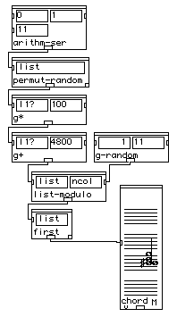
Figure 1: A patch
Much like in most graphical environments, PatchWork's interface isevent-driven. It consists of windows in which different kinds ofgraphical items can be positioned, moved and edited in various waysaccording to actions triggered by external events such as mouseclicking or key pressing. Among all windows in PW, one (and only one)is always distinguished to be active . The active window isresponsible for mapping external events to specific actions. The PWinterface, written in CLOS, takes advantage of predefined graphicalclasses and methods available in MacIntosh Common Lisp MCL 2.0. AllPatchWork windows are defined as a particular subclass of the MCLwindow class. There are five types of windows in PatchWork: patchwindow, music notation, rhythm editor, break point function (BPF) andtext window. Only the first is used for patch graph construction (asdefined above). The others inplement different kinds of editors. Wedescribe next the underlying class and methods implementing patchwindows.
The patch window class is defined as follows:
(defclass C-pw-window (window) ((patch-scrap :initform nil :allocation :class :accessor patch-scrap) (wins-menu-item :initform nil :accessor wins-menu-item) (abstract-box :initform nil :accessor abstract-box) (patch-win-pathname :initform nil :accessor patch-win-pathname) (save-changes-to-file-flag :initform nil :accessor save-changes-to-file-flag) (super-win :initform nil :accessor super-win) (super-note :initform nil :accessor super-note)))
where the slots are:
patch-scrap :
a list used as a scrap buffer for cut-copy-paste edition actionson the window.
wins-menu-item :
a pointer to an associated menu-bar object (to be describedfurther below).
abstract-box :
a pointer to an abstraction box (to be described later) which thiswindow belongs to (if any).
patch-win-pathname :
a string representing the pathname of the file where the windowwas last saved (if any).
save-changes-to-file-flag :
T or NIL depending on whether the window has been modified sincethe last time it was opened.
super-win, super-note :
not used (kept for compatibility).
Items contained within MCL standard windows must be subclasses ofview (window itself is a subclass of view ).Boxes in PW are thus defined as subviews of the patch window. Viewand window classes provide standard methods for handling externalevents. Relevant to PW are:
view-click-event-handler :
pressing the mouse inside the active window.
view-activate-event-handler :
pressing the mouse to make a non active window active.
view-deactivate-event-handler :
pressing the mouse to make an active window non active.
view-key-event-handler :
pressing a key while the window is active.
window-grow-event-handler :
changing the size of the window
window-mouse-up-event-handler :
stop pressing the mouse.
PW specializes each one of this standard methods as follows
(defmethod view-click-event-handler ((self C-pw-window) where) (set-changes-to-file-flag self) (when (eq (call-next-method) self) (if *current-small-inBox* (kill-text-item) ) (unless (shift-key-p)(tell (controls self) #'deactivate-control)) (rlet ((user-rect :rect) (scratch-rect :rect) (i-rect :rect)) (#_pt2rect :long where :long (grow-gray-rect where 0 (wptr self) nil) :ptr user-rect) (dolist (item (controls self)) (setq where (view-position item)) (rset i-rect :rect.topleft where) (rset i-rect :rect.bottomright (add-points where (view-size item))) (#_SectRect :ptr user-rect :ptr i-rect :ptr scratch-rect) (unless (#_EmptyRect :ptr scratch-rect :boolean) (activate-control item))))))
Argument where is a MCL point representation of the currentcoordinates of the mouse. The above method first sets the flagindicating changes to the window. Then, if clicking was inside thewindow (but not inside one of its subviews), it closes any open inputdialog item of a PW box (see figure 2) and unselects all boxes (whenthe SHIFT key is not pressed). The rest of the code defines arectangle with diagonal going from point where to the currentposition of the mouse (if it is being dragged). Any PW boxintersecting this rectangle (which is drawn with a dashed frame bythe function grow-gray-rect ) is made a selected box (methodactivate-control ).
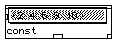
Figure 2: A box with an input being edited
(defmethod view-activate-event-handler :after ((self C-pw-window)) (when (abstract-box self) (draw-appl-label (abstract-box self) #\*)) (unless (equal (menubar) *patch-work-menu-root*) (set-menubar *patch-work-menu-root*) (enable-all-apps-menu-items)) (menu-item-disable *apps-PW-menu-item*) (update-PW-file-menu-items (top-level-patch-win? self) (save-changes-to-file-flag self)) (update-wins-menu-items self) (setq *active-patch-window* self))
Only an "after" method is defined for this event which draws a "*"in place of an "A" in the PW box whose abstraction patch this windowcontains (if any) , installs the correct menu bar and marks thewindow as active by setting the global variable*active-patch-window* to it.
(defmethod view-deactivate-event-handler :after ((self C-pw-window)) (when (abstract-box self) (draw-appl-label (abstract-box self) #\A)) (menu-item-enable *apps-PW-menu-item*) (if (wins-menu-item self) (MENU-item-ENABLE (wins-menu-item self))))
This "after" method does basically the opposite as the previousone.
(defmethod view-key-event-handler ((self C-pw-window) char) (cond (*current-small-inBox* (handle-edit-events (view-container *current-small-inBox*) char)) ((remove nil (ask-all (controls self) 'are-you-handling-keys? char)) nil) (t (let (no-change-flag) (case char (#\Newline (cond ((abstract-box self) (window-hide self) (window-select (view-window (abstract-box self)))) ((super-win self) (window-hide self) (window-select (super-win self))) (t (ed-beep) (setq no-change-flag t)))) (#\r (if (active-patches self) (rename-boxes self) (ed-beep))) ... ... (#\X (if (active-patches self) (allign-patches-to-x-y self) (setq no-change-flag t))) ... ... (#\A (make-abstraction-M self)) (#\p (tell (active-patches self) 'init-patch) (tell (active-patches self) 'play)) (#\s (tell (controls self) 'stop-play)) (#\v (run-boxes self)) (otherwise (ED-BEEP)(setq no-change-flag t))) (when (and (not (member char '(#\h #\i #\I #\R #\s #\p #\b #\D))) (not no-change-flag)) (set-changes-to-file-flag self))))))
Handles each key pressed which has a meaning for PatchWork. If adialog item is open for entering a value to an input of a PW box, themethod sends the event to that dialog item, otherwise it dispatchesaccording to the key pressed. key SHIFT-x, for instance, alignsselected PW boxes (those returned by the call (active-patches self) )so that they have the same X coordinate.
Methods window-grow-event-handler andwindow-mouse-up-event-handler are not specialized for patchwindows.
Each event thus results in a particular action being performed onthe window. Even though these are all "graphical " actions in thesense of affecting parameters controlling the layout of the window,no explicit drawing is done by them. Drawing is done on MCL views bya method called view-draw-contents . In patch windows this isinvoked in one of two ways: Implicitly by one of the standard MCLevent handling methods view-activate-event-handler orview-window-grow-event-handler (as noted above, either nospecialization or only ":after" specialization is defined for them),or explicitly by one of the subviews of the patch window.view-draw-contents is defined thus,
(defmethod view-draw-contents :before ((self C-pw-window)) (unless *pw-connections-drawing-mode* (tell (controls self) 'draw-connections)))
Only a ":before" method is supplied (actually, also an ":after"method but its action is irrelevant and kept only for compatibility).This method simply asks each box to draw all connections coming intoit, provided no boxes are being dragged. The default method invokesitself on each of the window's subviews. This means drawing on apatch window is actually done by each one of the PW boxes. Tounderstand this process we describe next classes and methods fordifferent types of boxes.
All PW boxes are subclasses of MCL standard class view .The most basic box has a functional behaviour (i.e. its output is theresult of computing a function of its inputs) and a fixed number ofinputs. The corresponding class is
(defclass C-patch (view) ((input-objects :initform nil :accessor input-objects) (pw-controls :initform nil :accessor pw-controls) (type-list :initform () :initarg :type-list :accessor type-list) (in-xs :initform nil :accessor in-xs) (in-ys :initform nil :accessor in-ys) (active-mode :initform nil :initarg :active-mode :accessor active-mode) (flip-flag :initform t :accessor flip-flag) (out-put :initform nil :initarg :out-put :accessor out-put) (pw-function-string :initform "+" :accessor pw-function-string) (pw-function :initform '+ :initarg :pw-function :accessor pw-function)))
A C-patch object is just a rectangle containing smaller rectanglesused for defining a fixed number of inputs and an output (see figure3). Each input either is connected to another box or contains avalue. Two parallel lists are used to keep track of this distinction.a) values b) arguments names c) input connected
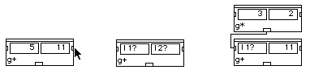
Figure 3. C-patch boxes.
The slot input-objects contains a list of pointers, one foreach input of the box counting from left to right and from top tobottom. Each element points to the PW box connected to thecorresponding input (if any). The slot pw-controls similarlycontains a list of pointers but in this case they point to thecorresponding rectangle where values are entered. The class definingthis rectangle object is described further below. Thusinput-objects and pw-controls always have the samenumber of elements. When there is no box connected to an input, thecorresponding element in the list input-objects also points tothe input rectangle. So if two corresponding elements on both listsare the same pointer, the associated input is not connected. Infigure 3a and 3b, input-objects and pw-controls containthe same pointers. In figure 3c the first element of input-objects points to the "g*" box (an object of the class C-patch) whereasthe first element of pw-controls points to the left inputrectangle. Other slots of C-patch can be interpreted as follows:
Type-list :
A list of the names (symbols) of possible output types for thebox.
in-xs, in-ys :
List of coordinates of the tiny rectangles next to the inputs (seethe arrow in figure 3).
active-mode :
If T, the box is selected.
flip-flag :
If T, input rectangles currently display values. Otherwise, theydisplay argument names.
out-put :
A pointer to the small output rectangle (an object of type C-pw-outrect to be described later).
pw-function-string :
A string naming the box (e.g. "g+", "g*", etc.).
pw-function :
This is the real thing. The name of the Lisp function objectdefining the functional behaviour of the box.
Input and output rectangles of a C-patch box are defined as itssubviews. Each one of them is a thus also a particular subclass ofview . The specific subclass depends on the type of values that canbe entered manually in the rectangle. PatchWork types are describedin section Defining Boxes. Here we are mainly concerned withthe graphical implications of such types. Generally speaking thereare only two kinds of values in PatchWork: numeric and non-numeric.Rectangles allowing numbers belong to the class C-numbox. Rectanglesaccepting all other values belong to the class C-ttybox . These aredefined as follows:
(defclass C-ttybox (static-text-dialog-item) ((open-state :initform t :initarg :open-state :accessor open-state) (doc-string :initform "" :initarg :doc-string :accessor doc-string) (value :initform nil :initarg :value) (type-list :initform () :initarg :type-list :accessor type-list))) (defclass C-numbox (C-ttybox) ((value :initform 0 :initarg :value :accessor value) (min-val :initform 0 :initarg :min-val :accessor min-val) (max-val :initform 30000 :initarg :max-val :accessor max-val)))
The only added slots in C-numbox , itself a subclass of C-ttybox ,are min-val and max-val (ignoring the redundantvalue slot in C-numbox , which is kept there for rather kludgyreasons). These impose bounds on the number that can possibly beentered by mouse dragging in the associated rectangle. Theyhave absolutely no effect in any other situation. Arbitrary sizenumbers could still be entered by double-clicking on the rectangle,for example. Other slots are
open-state :
T when the value or NIL when the argument name should bedisplayed.
doc-string :
The argument name.
value :
The value
type-list :
the list of names of types accepted on this entry. These shouldintersect with the connected box's output types for the connection tobe allowed.
The reader may have noticed that there is no slot keeping track ofthe local coordinates of each input rectangle inside a patch box.This is because PW does not allow any manual edition of the ghraphicsof a patch box. The coordinates of the input rectangles areautomatically computed as a function of their number, order and size(which can be stated at box definition time by setting appropriatelythe standard slot :view-size ). On the other hand, there seems to bea contradiction in defining input rectangles as subclasses ofstatic-text-dialog-item which cannot be edited at all! The reason forthis is that PW has chosen to forbid edition of input values bothwhen a box is connected and when the input rectangle is displayingits argument name. Therefore it has to capture double-clickingevents, which is simple enough when the underlying class does nothingon such events.
Besides the inputs, a fundamental subview of a patch box is theoutput rectangle. Since boxes are evaluated by clicking on thisrectangle, its underlying class most be capable of handling at leastthis kind of event. The class for output rectangles is defined as asubclass of button-dialog-item, with no additional slots
(defclass C-pw-outrect (button-dialog-item) ())
So we can see that there are three types of objects, the path box,its inputs and its output, "competing" for handling a click event.Such an event might inform a patch box that it should be selected(unselected) or that it should move, an input rectangle that itsvalue should be updated, and an output rectangle that it shouldtrigger an evaluation or that a connection with a different box isbeing established. The corresponding methods are:
(defmethod view-click-event-handler ((self C-patch) where) (if (eq self (call-next-method)) (progn ;inside patch,no active controls (with-focused-view self (cond ((double-click-p) (open-patch-win self)) ((control-key-p) (setf *current-move-patch-box* self) (move-or-resize-view self where)) ((inside-rectangle? (point-h where)(point-v where) 0 0 (w self) 5) (setf *current-move-patch-box* self) (move-or-resize-view self where)) ((inside-rectangle? (point-h where)(point-v where) (- (w self) 5) (- (h self) 5) 5 5) (setf *current-move-patch-box* self) (move-or-resize-view self where t)) ((inside-rectangle? (point-h where)(point-v where) 0 (- (h self) 12) 15 12) (cond ((option-key-p) (print (list 'outputtype (type-list self)))) ((command-key-p) (print (list 'inputtypes (mapcar 'list (ask-all (pw-controls self) 'doc-string) (ask-all (pw-controls self) 'type-list))))) (t (flip-controls self (setf (flip-flag self) (not (flip-flag self))))))) ((mouse-pressed-no-active-extra self (point-h where) (point-v where))) (t (toggle-patch-active-mode self))))) (when (option-key-p) ;inside controls (let ((ctrl (ask (pw-controls self) #'view-contains-point-p+self where))) (when ctrl (disconnect-ctrl self ctrl))))))
This starts moving or resizing the patch box if clicking is withincertain fixed predetermined areas (top, bottom left, or anywhere whenCTRL key is also pressed). In a different area (over the box's name)this causes flipping of value vs argument names display (no key ispressed) or printing of the list of output types of the box (OPTIONkey also pressed) or of input types (COMMAND key pressed). Finally,if clicking is inside one of the inputs and the OPTION key ispressed, a connection entering that input is eliminated. How exactlythis process is carried out is explained in the next section. Themethod for the output recatngle is:
(defmethod view-click-event-handler ((self C-pw-outrect) where) (if *standard-click-eval* (if (option-key-p) (progn (incf (clock *global-clock*)) (eval-enqueue `(format t "PW->~S~%" (patch-value ',(view-container self) ',(view-container self))))) (drag-out-line self where)) (if (option-key-p) (drag-out-line self where) (progn (incf (clock *global-clock*)) (eval-enqueue `(format t "PW->~S~%" (patch-value ',(view-container self) ',(view-container self))))) )))
As was already mentioned, this method either triggers evaluationof the box or starts drawing a connection coming out of it. Themechanism of evaluation is explained later in the Semanticssection. Drawing a connection is done very straightforwardly asfollows:
(defmethod drag-out-line ((view C-pw-outrect) where) (let* ((win (view-window view)) (last-mp (view-mouse-position win))) (setq where (view-mouse-position win)) (with-pen-state (:mode :patxor) (with-focused-view (view-window view) (loop (unless (mouse-down-p) (return)) (let ((mp (view-mouse-position win))) (unless (eql mp last-mp) (draw-line (point-h where)(point-v where) (point-h last-mp)(point-v last-mp)) (setq last-mp mp) (draw-line (point-h where)(point-v where) (point-h last-mp)(point-v last-mp))))) (draw-line (point-h where)(point-v where) (point-h last-mp)(point-v last-mp)))) (connect-patch? view (find-view-containing-point win last-mp)) (with-focused-view view (erase-view-inside-rect view))))
Which simply erases the old partial connection (if any) and drawsthe new one. The function draw-line calls a toolbox trap to do theactual drawing.
Clicking events are handled by input rectangles as follows:
(defmethod view-click-event-handler ((self C-ttybox) where) (if (and (open-state self) (double-click-p)) (view-double-click-event-handler self where))) (defmethod view-double-click-event-handler ((self C-ttybox) where) (declare (ignore where)) (open-pw-controls-dialog self)) (defmethod view-click-event-handler ((self C-numbox) where) (declare (ignore where)) (when (open-state self) (unless (call-next-method) (with-focused-view self (draw-rect 1 1 (- (w self) 2)(- (h self) 2))) (let* ((win (view-window self)) (first-v (point-v (view-mouse-position win))) (last-mp (view-mouse-position win)) (last-value (value self))) (loop (event-dispatch) (unless (mouse-down-p) (return)) (let ((mp (view-mouse-position win))) (unless (eql mp last-mp) (setq last-mp mp) (set-numbox-item-text self (setf (value self) (max (min-val self) (min (max-val self) (+ last-value (* (map-mouse-increment self) (- first-v (point-v last-mp)))))))) (view-draw-contents self) (with-focused-view self (draw-rect 1 1 (- (w self) 2)(- (h self) 2))) (item-action-while-drag self)))))) (item-action-after-drag self) (view-draw-contents self)))
On a double-click event and value visualization state (see above),non numeric input rectangles (class C-ttybox ) open a small window ofthe size of the input rectangle containing an editable text dialogitem where values can be entered. On a single click event they donothing. Numeric inputs (class C-numbox ) scroll values in fixedincrements while the mouse is dragged. On double-click events they doas non numeric inputs (i.e. call-next-method , above).
As was the case for a patch window, actual drawing of the patchbox is done by a suitable specialization of MCL standard methodview-draw-contents. For a box, this method is invoked eitherimplicitly by the containing window's method (when a box is added toit, for example) or explicitly within the method move-or-resize-viewwhen a box is being dragged. The drawing method of a PW box is:
(defmethod view-draw-contents ((self C-patch)) (with-pen-state (:pattern *white-pattern*) (fill-rect* 1 1 (- (w self) 2) (- (h self) 2))) (with-font-focused-view self '("Monaco" 9 :SRCOR :PLAIN) (call-next-method) (draw-small-rects self) (draw-patch-view-outline self) (draw-function-name self 2 (- (h self) 5)) (draw-rect 0 0 (w self)(h self))))
The method first erases all the area inside the box, then asksinputs and output rectangles to draw themselves (done bycall-next-method ). Finally it draws the tiny rectangles next to eachinput, its contour rectangle, the box's name and the top brow.
In the next section we give some details on the implementation ofbox editing procedures .
PW boxes can be moved, cut, copied or pasted, either singly orcollectively. Each one of these actions take effect on selectedboxes. Boxes are selected by clicking or SHIFT-clicking on them. Aswas already mentioned, selecting a box simply flips the value of theactive-mode slot in C-patch . When a set of selected boxes is moved,the box which the mouse is pointing to is in charge of performing therelevant actions. The method invoked is the following:
(defmethod move-or-resize-view ((view C-patch) where &optional resize-fl) (let* ((container (view-container view)) (prev-mp (view-mouse-position container)) (last-mp prev-mp) (delta where) (fix-pos prev-mp) (current-pos (view-position view)) (w (view-window view)) (from-end (subtract-points (view-size view) where)) (change-size? (and (resize-patch? view) resize-fl)) (active-patches (active-patches w)) (active-patches-rest (remove view active-patches :test 'eq)) (group-move? (and (member view active-patches :test 'eq) active-patches)) (moving-patches (or group-move? (list view))) (the-rest (set-difference (controls w) moving-patches :test #'eq))) (if change-size? (change-your-size view w from-end where) (progn (connect/unconn moving-patches the-rest t) (tell moving-patches 'view-frame-patch current-pos delta prev-mp prev-mp) (loop (event-dispatch) (unless (mouse-down-p) (return)) (let ((mp (view-mouse-position container))) (unless (eql mp last-mp) (setq last-mp mp) (tell moving-patches 'view-frame-patch current-pos delta prev-mp mp) (setq prev-mp mp) ))) (tell moving-patches 'view-frame-patch current-pos delta prev-mp prev-mp) (unless (eql last-mp fix-pos) (push-to-top view) (set-view-position view (subtract-points prev-mp delta)) (if group-move? (let ((dif-h (- (point-h prev-mp) (point-h fix-pos))) (dif-v (- (point-v prev-mp) (point-v fix-pos))) (max-h (- *screen-width* 10 (point-h (view-position container)))) (max-v (- *screen-height* 10 (point-v (view-position container))))) (dolist (patch active-patches-rest) (dmove-patch patch (min dif-h (- max-h (point-h (view-position patch)))) (min dif-v (- max-v (point-v (view-position patch)))))))) (if (shift-key-p) (push-modules-to-back moving-patches)) ) (connect/unconn moving-patches the-rest) (setf *current-move-patch-box* nil) ))))
This method is called both when a box is moved and when it isresized (only certain PW boxes, notably those having only one input,can be resized by graphical manipulations). In the latter case theargument resize-fl is T and method change-your-size is called. In thefirst case, all connections leading to a moving box are deleted(connect/unconn method), and an outline of each moving box iscontinuously drawn ( view-frame-patch method) following mousedragging. At the end boxes are set to their new positions when themouse is unpressed and connections restablished. Method push-to-topmoves the main moving box to the front of MCL's kept subviews list sothat redrawing is more efficiently done. Other editing possibilitiesin a PW window are cut ,copy , paste operations,described below.
(defmethod copy ((self C-pw-window)) (let ((*decompile-chords-mode* t)) (when (active-patches self) (setf (patch-scrap self) (decompile-selection self))))) (defmethod paste ((self C-pw-window)) (when (patch-scrap self) (let ((patches (eval (patch-scrap self)))) (apply #'add-subviews self patches) (set-changes-to-file-flag self) (tell patches 'set-pw-window-pointers self) (tell patches 'draw-connections) ))) (defmethod cut ((self C-pw-window)) (let ((active-patches (active-patches self))) (when active-patches (set-changes-to-file-flag self) (disconnect-all-cut-patches self active-patches) (copy self) (dolist (patch active-patches) (remove-yourself-control patch) (remove-subviews self patch))) ))
These methods take effect on active boxes, which are referenced bythe list in the window's active-patches slot. PW editing scrap alwayscontains (if anything) a Lisp representation of some patch boxes.This Lisp representation, called decompilation , is simply aform whose evaluation reconstructs the graphic items composing thepatch boxes. Each box must have its associated decompilation form.The decompile method of C-patch and of any other class of PW box isresponsible for constructing the Lisp representation of the box. Insection Box decompilation and compilation we give details onhow this is done for standard PW boxes . The method copy above simplysends a decompile message to each selected box. Variable*decompile-chords-mode* indicates whether music notation contained inediting boxes is or is not also saved in the scrap (in its Lisprepresentation). Method cut sets the window modification flag (sothat the right dialog is displayed when the user attempts to closethe window), erases all connections leading into selected boxes,copies the boxes into the scrap and finally erases them from thewindow. Method paste does essentially the opposite. Moving andcut-copy-pasting boxes are basically all editing actions available inPW. The operation of abstraction , described next, has both anediting side effect and a program structuring aspect. It is one ofthe fundamental constructs of PW.
PW allows only procedural abstraction for graphical programstructuring. An abstraction in PW is the equivalent tofunction definition in Lisp. A certain number of graphical operationsare inherent to the process of building PW abstractions. First, theboxes comprising the body of the abstraction must be selected. Theseinclude zero or more absin boxes defining the inputs andexactly one absout box defining the abstraction output. Next,an abstract message is sent to the patch window. The messsageis a method invocation performing all the necessary actions, asdescribed below:
(defmethod make-abstraction-M ((self C-pw-window) &optional (abstract-class 'C-abstract-M)) (if (not (active-patches self)) (CCL:message-dialog "No active patches!") (let ((active-rect (find-active-rectangle self)) (out-box (find-abstract-out-box self (active-patches self))) new-win patches abstract-box in-boxes ) (cond ((not out-box) (CCL:message-dialog "One abstract-out-box should be selected !")) ((> (length out-box) 1) (CCL:message-dialog "Only one abstract-out-box should be selected !")) (t (cut self) (setq patches (eval (patch-scrap self))) (tell patches 'dmove-patch (- (car active-rect)) (- (second active-rect))) (setq out-box (car (find-abstract-out-box self patches))) (setq new-win (make-instance (type-of self) :close-box-p nil :window-title (dialog-item-text (car (pw-controls out-box))) :view-position (make-point (+ (x self) (first active-rect)) (+ (y self) (second active-rect))) :view-size (make-point (third active-rect) (fourth active-rect)) )) (apply #'add-subviews new-win patches) (deactivate-control out-box);;inboxes (setq in-boxes (find-abstract-in-boxes self patches)) (setq abstract-box (make-std-abstract-box self patches new-win in-boxes abstract-class )) (unless abstract-box (window-close new-win) (apply #'add-subviews self patches)) (when abstract-box (add-subviews self abstract-box) ;;connections (make-abstract-box-connections self abstract-box out-box in-boxes new-win) (tell (controls new-win) 'update-win-pointers new-win)) abstract-box)))))
This method is invoked either by view-key-event-handler ofC-pw-window if key "A" was pressed or by the function associated withthe Abstract menu item in menu PWoper . It firstcomputes a rectangle circunscribing all selected boxes and looks foran absout box among them. Then appropriate error messages aredisplayed if either zero or more than one absout boxes areselected. If there is no error, all selected boxes are eliminatedfrom the window (see method cut above), new instances of them arecomputed, their relative positions changed so that the entireabstracted patch begins at the top left a new patch window which isnext created, and finally added as subviews of that window. Next, anew patch box is created with as many inputs as absin boxeswere given. This box representing the entire abstracted patch isconstructed by method make-std-abstract-box which is explained indetail in section Representation of abstractions. Once thisabstract box constructed, it is added to the original patch window inplace of the selected boxes. Finally, a set of pointers is set up sothat the new abstract box may know the new window containing thepatch boxes it represents and viceversa (methodmake-abstract-box-connections ). Each one of the abstract box'sinputs is also made to point to its corresponding absin boxand a slot in the (newly instanciated) absout box is made topoint to the window containing it.
As was already mentioned, there is really no graphical actionavailable for patch windows other than cut-copy-paste andabstract . In the next sections we describe the implementationof editing facilities in other types of PW windows.
Editors form the bulk of PatchWork's code. An editor in PW (seefigure 4) is a window containing an object called viewcontroller . The view controller handles edition of parametersaffecting globally the outlook of the window (such as zooming).Besides a set of buttons for giving user access to this globalediting, a view controller contains a number of panels . Apanel object handles specific editing actions within a precise regionof the window (such as changing the pitch of a note). Any subview ofan editor (view controller or panel) can handle mouse events occuringinside its associated region. In general, editor windows handle onlykey and activate-deactivate events. The latter usually does nothingmore than setting up the right menubar for the editor. The formerusually captures CARRIAGE-RETURN (hide the editor), ENTER (unselectthe editor), H (help) and R (rename the editor window). All other keyevents are passed to the view controller. All PW editor windows aresubclasses of application windows. These are windowsassociated with patch boxes in such a way that both editing actionscan be made to change the functional output of the box andreciprocally functional computations in a patch can be made to affectthe graphical contents of editors. This interaction is described ingreater detail in section Boxes with windows. The following isthe definition of an application window:
(defclass C-application-window (window) ((pw-win :initform nil :accessor pw-win) (pw-object :initform nil :accessor pw-object)))
where pw-win contains a pointer to the patch window containing thebox associated with this editor and pw-object contains a pointer tothat box. Event handling methods for this window are just skeletonsmeant to be redefined by the subclasses. There are four editorsubclasses: Music notation, Break-point function, list editor andtext editor. We describe each of these below.
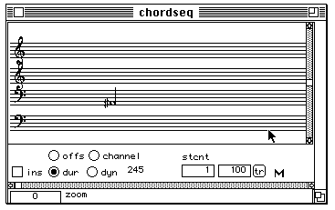
Figure 4: A PW editor. The view controllercontains the horizontalscroll bar, all buttons below the tail of thearrow and a panel (where the arrow lies in). The panelcontains the vertical scroll bar and the score.
Music notation editors are used to manipulate chords representedin a standard music notation score. In PW all graphical itemsappearing in a score are implemented as written text in a particularfont format. This font (refered to as "MusNot-j" of size 18), similarto the well known Sonata font, has been specifically designed for PW.It is contained in a resource file called CLpf.rsrc loaded by the PWimage each time it is launched. A music notation editor class isdefined thus,
(defclass C-mn-window (C-mouse-window C-application-window) ((super-win :initform nil :accessor super-win) (super-note :initform nil :accessor super-note)))
The two slots correspond to functionalities not yet available andshould thus be ignored. The editor inherits both from the alreadydescribed C-application-window and from a special kind of windowclass called C-mouse-window which is only introduced for the purposeof specializing the window-null-event-handler method called when themouse is moved (even when unclicked). The relevant definitions are
(defclass C-mouse-window (window) ()) (defmethod window-null-event-handler ((self C-mouse-window)) (call-next-method) (when (and (subviews self) (not (eq *last-mouse* (view-mouse-position self)))) (let* ((mouse (view-mouse-position self)) (active-subview (ask (subviews self) #'view-contains-point-p+self mouse))) (setq *last-mouse* mouse) (if active-subview (if (mouse-down-p) (view-mouse-dragged active-subview mouse) (view-mouse-moved active-subview mouse)) (no-active-mouse-moved self))))) (defmethod no-active-mouse-moved ((self C-mouse-window))) (defmethod window-grow-event-handler ((self C-mouse-window) where) (declare (ignore where)) (call-next-method) (tell (subviews self) 'view-window-grown)) (defmethod window-zoom-event-handler ((self C-mouse-window) where) (declare (ignore where)) (call-next-method) (tell (subviews self) 'view-window-grown)) (defmethod window-mouse-up-event-handler ((self C-mouse-window)) (tell (subviews self) #'view-mouse-up))
The window-null-event-handler method dispatches either aview-mouse-dragged (mouse is down) method or a view-mouse-moved(mouse is up) method to the subview containing the coordinates of themouse. If none then method no-active-mouse-moved is invoked. Theother methods just pass the same message to all subviews.
As was mentioned, the first subview of an editor window is aview controller object which usually captures external events.This is clearly seen in the following method definitions ofC-mn-window
The last two methods set up the appropriate menu bar for musicnotation (MN) editors. The other methods simply pass the message tothe view controller (referenced as editor-view-object ). All keyshandled in key-pressed-extra correspond to unavailablefunctionalities (kept there for future use) and should be ignored.Methods cut -copy-paste are invoked by the equally named entries inthe EDITION menu installed by the view-activate-event-handler :aftermethod. The view controller class is defined as follows:
(defclass C-mus-not-view (ccl::scroller) ((editor-objects :initform nil :initarg :editor-objects :accessor editor-objects) (active-editor :initform nil :accessor active-editor) (external-controls :initarg nil :accessor external-controls) (ctrl-settings :accessor ctrl-settings) (saved-selected :initform nil :accessor saved-selected) (MN-zoom-scaler :initform 1.0 :initarg :MN-zoom-scaler :accessor MN-zoom-scaler) (local-scale :initform nil :accessor local-scale) (local-approx :initform nil :accessor local-approx)))
View controllers inherit from ccl::scroller which is a standardMCL view class capable of scrolling its subviews. The slots are
editor-objects :
The list of panels .
active-editor :
A pointer to the panel currently handling editions.
external controls :
The list of subviews different from panels.
control settings :
The current state of each of the above.
saved-selected :
A list of currently selected chords (if any)
MN-zoom-scaler :
current value of zooming controller.
local-scale :
Scale (C-major or chromatic) currently being used for this editor
local-approx :
Approximation (semitone,quartertone, etc) currently being used.
Besides the scroll bar and the panels, a MN view controllercontains buttons for controlling display of note parameters, such asduration, MIDI velocity or channel. These are all contained in theexternal-controls list. A method exists for creating and groupingbuttons into clusters so that selecting one automatically unselectsthe others:
(defmethod add-to-radio-cluster ((self C-mus-not-view) x y txt type) (make-instance 'radio-button-dialog-item :view-container (view-window self) :view-position (make-point x y) :dialog-item-text txt :view-font '("monaco" 9 :srcor) :dialog-item-action #'(lambda (item) (set-value-ctrl self item type) (update-view-controler self)))) In MN editors, when the window is resized, all panels must beproportionally resized. The view controller handles this situation asfollows:
(defmethod view-window-grown ((self C-mus-not-view)) (declare (special *MN-view-ctrls-space* *mn-draw-offset*)) (set-view-size self (subtract-points (view-size (view-window self)) (make-point 15 25))) (let* ((new-view-size (subtract-points (view-size self) *MN-view-ctrls-space*)) (objects (editor-objects self)) (v-size (truncate (point-v new-view-size) (length objects))) (pos 2) (origin-count 0) (adjusted-size (- (point-h new-view-size) *MN-draw-offset*))) (dolist (panel objects) (set-view-position panel (make-point (point-h (view-position panel)) pos)) (set-view-size panel (make-point (point-h new-view-size) (- v-size 6))) (setf (origin panel) origin-count) (if (monofonic-mn? self) (incf origin-count adjusted-size)) (incf pos v-size))))
The test monofonic-mn?distinguishes between "single system" (e.g.the editor associated with a chordseq patch box) and "multi systems"(e.g. The editor of a multiseq box) editors. Both might have severalpanels but in the first case they are just a matter of layoutconvenience much like having several lines in a text instead of justone long line, whereas in the second they represent different voicesor instruments in a score. In MN editors the position of an object(chord) in the score also represents its position in absolute time.This means that the time origin of a panel in a multi system editoris always equal to zero, whereas in a single system it is equal tothe ending time of the previous panel (or zero, if it is the firstone). The code inside dolist above makes this distinction.
A standard MN view controller handles at least zooming, scrolling,mouse moving and key pressing events. Relevant methods are thefollowing:
(defmethod scroll-bar-changed ((view C-mus-not-view) scroll-bar) (let ((new-value (point-h (scroll-bar-setting scroll-bar))) (panels (editor-objects view))) (dolist (panel panels) (erase-yourself panel) (set-origin panel (make-point new-value (point-v (view-scroll-position panel)))) (view-draw-contents panel) ))) (defmethod ccl::normal-scroll-bar-limits ((view C-mus-not-view) max-h &optional max-v) (declare (ignore max-h max-v)) (values (make-point 0 30000) (make-point 0 30000)))
For each panel, scrolling first erases it, then changes its timeorigin according to the scrolling position and finally redraws it sothat objects having time positions falling within the new time rangeof the panel get displayed.
(defmethod view-mouse-moved ((self C-mus-not-view) mouse) (setf (active-editor self) (ask (editor-objects self) #'view-contains-point-p+self mouse)) (if (active-editor self) (view-mouse-moved (active-editor self) mouse) (tell (subviews self) #'reset-active-chord))) (defmethod view-mouse-dragged ((self C-mus-not-view) mouse) (setf (active-editor self) (ask (editor-objects self) #'view-contains-point-p+self mouse)) (if (active-editor self) (view-mouse-dragged (active-editor self) mouse)))
Mouse moving and dragging simply pass the message to the activepanel (where the mouse lies in).
(defmethod key-pressed-MN-editor ((self C-mus-not-view) char) (cond ((eq char #\p) (play-all-staffs self)) ((eq char #\s) (stop-all-staffs self)) ((eq char #\o) (tell (editor-objects self) 'open-object-editor (view-window self))) ((and (eq char #\c) (active-editor self)) (when (active-note (active-editor self)) (add-MN-to-note (active-note (active-editor self)) (view-window self) 0 0))) ((eq char #\w) (when (active-note (active-editor self)) (add-PWwin-to-note (active-note (active-editor self)) (view-window self) 0 0))) ((eq char #\A) (Do-selections-all self)) (t (when (active-editor self) (handle-key-event (active-editor self) char)) )))
Only #\p (play) and #\s (stop playing) keys are actually valid.The functionality of Keys #\o, #\c, #\w, #\A is no longer defined forMN editors. Other keys are passed to the active panel.
A panel is just a rectangular view where text in PW's musicnotation font is written. Its definition is:
(defclass C-music-notation-panel (ccl::scroller) ((chord-line :initform nil :initarg :chord-line :accessor chord-line) (visible-chords :initform nil :accessor visible-chords) (active-chord :initform nil :accessor active-chord) (active-note :initform nil :accessor active-note) (staff-list :initform *g2-g-f-f2-staffs* :initarg :staff-list :accessor staff-list) (staff-num :initform 6 :accessor staff-num) (origin :initform 0 :initarg :origin :accessor origin) ))
In the current PW implementation only a subset of the above slotsis relevant. These are:
Chord-line :
a pointer to an object containing all of the panel's chords.
Visible-chords :
The subset of chords currently visible in the panel.
staff-list :
a list of staff objects (described below).
staff-num :
index of the currently considered staff in the above list.
origin :
the time origin of the panel.
A panel must keep all information concerning score drawing. Thisincludes the type of staffs that should be drawn. A staff in MN is anobject defined as follows:
(defclass C-staff () ((clef-obj :initform nil :initarg :clef-obj :accessor clef-obj) (delta-y :initform 0 :initarg :delta-y :accessor delta-y)))
clef-obj is the clef associated with the staff and delta-y is thevertical offset relative to the pixel position of middle C where thelowest staff line is drawn. Vertical pixel position of middle C iskept in the global variable *MN-C5*. A clef is itself an object:
(defclass C-clef (simple-view) ((clef :initform #\& :initarg :clef :accessor clef) (delta-y :initform 0 :initarg :delta-y :accessor delta-y)))
clef is a character whose graphical representation in the MN fontgives the drawing of this clef (e.g. #\& for a G clef). delta-yis the vertical offset, relative to the pixel position of the loweststaff line, where the character is drawn. Event handling in astandard MN panel is restricted to the following:
(defmethod view-click-event-handler ((self C-music-notation-panel) where) (declare (ignore where)) (setf *MN-first-click-mouse* (view-mouse-position self)) ) (defmethod view-mouse-moved ((self C-music-notation-panel) mouse) (declare (ignore mouse)) (let* ((mouse (view-mouse-position self)) (mouse-h (point-h mouse)) (mouse-v (point-v mouse))) (setf (active-chord self) (find-mouse-point-in-chords self (- mouse-h *MN-draw-offset*))) (when (active-chord self) (setf (active-note self) (ask (notes (active-chord self)) 'inside-note?-3 mouse-h (calc-chord-pixel-x (active-chord self) (MN-zoom-scaler (view-container self)) (+ *MN-draw-offset* (point-h (view-scroll-position self))) (point-h (view-scroll-position self))) (give-y-diatone self mouse-v ))))))
The first click position is saved just in case the event isactually mouse dragging. When the mouse is moved along a panel acheck is made to see if it is just over the head of a note. When thisis the case the active-note slot is set to that note. The mostfundamental action in a panel is of course drawing. The method belowaccomplishes that
(defmethod view-draw-contents ((self C-music-notation-panel))) (let ((my-view (view-container self))) (let ((*mn-view-ins-flag* (get-ctrl-setting my-view :ins)) (*mn-view-dur-flag* (get-ctrl-setting my-view :dur)) (*mn-view-dyn-flag* (get-ctrl-setting my-view :dyn)) (*mn-view-offset-flag* (get-ctrl-setting my-view :offs)) (*staff-num* (staff-num self)) (*current-music-notation-scale* (or (local-scale my-view) *current-music-notation-scale*)) (*current-approx-scale* (or (local-approx my-view) *current-approx-scale*))) (declare (special *mn-view-ins-flag* *mn-view-dur-flag* *mn-view-dyn-flag* *mn-view-offset-flag*)) (set-visible-chords self) (with-font-focused-view self (tell (staff-list self) #'draw-staff (+ (point-h (view-scroll-position self)) 2) *MN-C5*) (view-draw-specific self (MN-zoom-scaler my-view) (view-scroll-position self) *MN-draw-offset* *MN-C5*))))) (defmethod view-draw-specific ((self C-music-notation-panel) zoom-scale scroll-pos MN-offset MN-C5) (tell (set-visible-chords self) #'draw-chord zoom-scale (+ MN-offset (point-h scroll-pos)) (point-h scroll-pos) MN-C5))
First the state of each view controller's button (seefigure 4 above) is stored in a suitable global variable.Specific drawing methods of a note make use of these variables todecide what to draw next to the note (duration, dynamics, channel,etc). Next, the scale (C-major or chromatic) and the approximation(semitone, quartertone, etc) is found either from what the user haslocally set for the panel using the local popup menu or from theglobal setup (in menu PWoper). Then the staff is drawn afterfocusing on the panel's region bounds and selecting the panel's font.Finally, method view-draw-specific (which is the one meant to bespecialized for subclasses) sends a message to each visible chord todraw itself. How exactly a chord is drawn is explained further below.Before doing that we show an example of how to create an instance ofa PatchWork MN editor:
(let ((editor (pw::make-music-notation-editor 'pw::C-MN-window 'pw::C-mus-not-view 'pw::C-music-notation-panel (make-point 600 170))) (chord-line (make-instance 'pw::C-chord-line :chords (list (pw::mk-chord '(6300) '(70) '(-20) '(48)))))) (setf (pw::chord-line (first (pw::editor-objects (pw::editor-view-object editor)))) chord-line) (window-select editor))
This example creates a MN editor window containing a MN viewcontroller itself containing a MN panel. The size of the window is600 by 170 pixels. The contents of the panel is a chord having thenote D# with duration 70 , time offset (relative to the chord's onsettime) of -20 and MIDI velocity 48. The PW functionmake-music-notation-editor is defined as
(defun make-music-notation-editor (window-class view-class panel-class w-size &optional (staffs *g2-g-f-f2-staffs*) name) (let* ((win-string (if name (string-downcase name) (format nil "MN~D" (incf *MN-window-counter*)))) (mn-window (make-instance window-class :close-box-p t :window-show nil :window-title win-string :view-position (make-point 10 50) :view-size w-size )) (editor-view (make-instance view-class :view-container mn-window :view-position (make-point 2 2) :view-size (subtract-points w-size (make-point 15 25)) :bottom-boarder 20 :v-scrollp nil :track-thumb-p t))) (setf (editor-objects editor-view) (list (make-instance panel-class :view-container editor-view :view-position (make-point 0 0) :view-size (subtract-points w-size (make-point 24 67)) :h-scrollp nil :track-thumb-p t :view-font '("MusNot-j" 18 :srcor) :chord-line (make-instance 'C-chord-line)))) (setf (staff-list (car (editor-objects editor-view))) staffs) mn-window))
Which does nothing more than constructing the instances of the MNobject classes supplied in the inputs and then fill the slotspointing to these objects accordingly. Running the above exampleconstructs an editor looking somewhat differently from that of figure4. This is because PW's standard MN editors are built from subclassesof the objects we have been discussing. These subclasses aredescribed later.
In PW each object is supplied both a set of methods defining itsfunctional meaning and a set of methods implementing its graphicalappearance. MN objects like chords or notes posses their own scoredisplaying methods shown below.
(defmethod draw-chord ((self C-chord) t-scfactor beg-x time1 C5 &optional mode) (when (notes self) (let ((x-now (calc-chord-pixel-x self t-scfactor beg-x time1))) (draw-stem self x-now C5 mode) (tell (give-all-draw-notes self) 'draw-note-4 x-now C5 t-scfactor) (draw-extra-info self x-now C5 mode))))
First the position of the chord's stem is calculated from the timeonset of the chord, the zooming scale setting (in the viewcontroller) and a fixed given offset (beg-x ). Then the stem is drawn(just a vertical line) and each note head of the chord is asked todraw itself in the calculated position. Method draw-extra-info is notused at present. Note drawing proceeds as follows:
(defmethod draw-note-4 ((self C-note) x C5 t-scfactor) (let ((y-now (give-pixel-y self C5)) (x-now (+ x (delta-x self))) (alt (alteration self))) (draw-char x-now y-now #\w) (if *mn-view-dyn-flag* (draw-note-symbolic-dynamic self x-now y-now)) (if *mn-view-dur-flag* (draw-note-duration-line self x-now y-now t-scfactor)) (if (and *mn-view-offset-flag* (not *mn-view-time-flag*)) (draw-note-offset-line self x-now y-now t-scfactor)) (when (and (instrument self) *mn-view-ins-flag* t-scfactor) (draw-char x-now y-now #\á) (draw-instrument (instrument self) x-now y-now (round (+ (* t-scfactor (dur self)))))) (if (and alt (not (eq *staff-num* 7) )) ; empty staff (draw-char (+ x (alt-delta-x self)) y-now alt))))
The note head is drawn (character #\w in MN font). Then durationline, dynamics indication and offset line are drawn if thecorresponding view controller button is set. Finally the alterationis drawn. Method draw-instrument is currently used to displayinstrument identification for each note at the bottom of the panel.This is only relevant in certain PW libraries such as the CHANT-PWinterface.
The MN window, view controller and panel we have described aremeant to be skeleton objects with very general score drawingfunctionalities. The actual editors used in PW define subclasses ofthese. There are four types of music notation editors in PW: Chord,chord sequence, multi chord sequence and rhythm. The implementationof the first two is based on the same specialization of classesC-mus-not-view and C-music-notation-panel. The respective subclassesare:
(defclass C-MN-view-mod (C-mus-not-view) ((selections :initform nil) (popUpBox :initform nil :accessor popUpBox) (dial-stf :initform nil) (dial-stT :initform nil) ... ... (OK-button :initform nil) (cancel-button :initform nil)))
and
(defclass C-MN-panel-Mod (C-music-notation-panel) ((selected-chords :initform nil :accessor selected-chords) (drag-function :initform nil :allocation :class :accessor drag-function) (undo-MN-edit :initform nil :accessor undo-MN-edit)))
The view controller subclass adds several slots for storing valuesof chord transformation parameters set up by the user in a dialog(its OK and CANCEL buttons are also kept in slots) and also a slotfor a popup menu (see figure 5). The panel subclass adds slots forkeeping track of selected chords, for a dragging function tagspecifying which note parameter is being edited and a scrap bufferfor saving chords prior to editing (thus allowing minimal actionundoing).
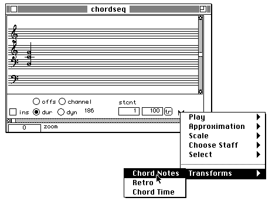
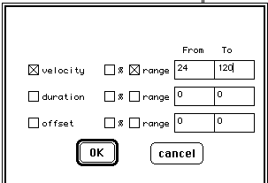
Figure 5: Chord transformation parameters selectedin a dialog displayed by a popup menu item.
Extra items appearing in the view controller shown in figure 5 areconstructed after the view object's instanciation by method
(defmethod make-extra-controls :after ((self C-MN-view-mod)) (let* ((x-pos (+ 86 (point-h (view-position self)))) (y-pos (+ (point-v (view-position self)) (point-v (view-size self)) -35)) (ctrls (list (add-to-radio-cluster self (+ 86 (point-h (view-position self))) (+ (point-v (view-position self)) (point-v (view-size self)) -35) "channel" :channel) (setf (popUpBox self) (make-popUpbox "M" self *MN-common-popUpMenu* :view-position (make-point (+ x-pos 204) (+ y-pos 18)) :view-container (view-window self))) (make-instance 'button-dialog-item :view-size (make-point 14 14) :view-container (view-window self) :view-position (make-point (+ x-pos 182) (+ y-pos 16)) :dialog-item-text "tr" :view-font '("monaco" 9 :srcor) :dialog-item-action #'(lambda (item) (declare (ignore item)) (transpose-selection self))) (make-instance 'C-numbox :view-size (make-point 36 14) :value 100 :min-val -12700 :max-val 12700 :type-list '(fixnum) :view-container (view-window self) :view-position (make-point (+ x-pos 144) (+ y-pos 16))) (make-instance 'C-numbox-staffcnt :view-size (make-point 36 14) :value 1 :min-val 1 :max-val 10 :type-list '(fixnum) :view-container (view-window self) :view-position (make-point (+ x-pos 104) (+ y-pos 16))) (make-instance 'static-text-dialog-item :view-container (view-window self) :view-position (make-point (+ x-pos 104) (+ y-pos 2)) :dialog-item-text "stcnt" :view-font '("monaco" 9 :srcor) :view-size (make-point 36 12)) (make-instance 'static-text-dialog-item :view-container (view-window self) :view-position (make-point (+ x-pos 44) (+ y-pos 16)) :dialog-item-text " " :view-font '("monaco" 9 :srcor) :view-size (make-point 50 12))))) (setf (external-controls self) (append (external-controls self) ctrls)) (setf (ctrl-settings self) (append (ctrl-settings self) (list (list :channel)))) (set-up-dialog self)))
which creates instances of channel, staff count and transpositionbuttons and places a local popupmenu (function make-popUpbox) to theright of the last button. This menu is defined as follows:
(declare (special *MN-common-popUpMenu*)) (setf *MN-common-popUpMenu* (new-menu " " (new-menu "Play" (new-leafmenu "All" #'(lambda() (play-all-staffs *target-action-object*))) (new-leafmenu "Visible" #'(lambda()(play-the-chords *target-action-object* t))) ... ... (new-menu "Approximation" (prog1 (setf a-leaf-menu (new-leafmenu "SemiTone" #'(lambda() (use-all-approx-scale *target-action-object* *c-major-scale*)))) (set-command-key a-leaf-menu #\2)) (prog1 (setf a-leaf-menu (new-leafmenu "Quarter tone" #'(lambda() (use-all-approx-scale *target-action-object* *1/4-tone-chromatic-scale*)))) (set-command-key a-leaf-menu #\4)) ... ... (new-menu "Scale" (new-leafmenu "C-major" #'(lambda() (use-all-scale *target-action-object* *c-major-scale*))) ... ... (new-menu "Choose Staff" (new-leafmenu "G2-G" #'(lambda() (use-staff *target-action-object* 1 *g2-g-staffs*))) ... ... (new-menu "Select" (new-leafmenu "visible" #'(lambda() (Do-selections *target-action-object* nil))) (new-leafmenu "All" #'(lambda() (Do-selections *target-action-object* t)))) (new-leafmenu "-" ()) (new-menu "Transforms" (new-leafmenu "Chord Notes" #'(lambda()(Cresc-selection *target-action-object*))) ... ... )))))
These are standard MCL menu item objects (some have been leftout). Each menu item action function calls a suitable method on*target-action-object* which is a PW global variable always pointingto the object owning the popupmenu where the item has been chosen. Inthis way the selected method is made to belong to the class of theobject containing the popup menu (the view controller in figure 5).The only added functionalities in subclass C-MN-view-mod are thus theset of methods for handling popup menu options and new buttonsactions (such as chord transposing). These are rather simple and willnot be described. On the other hand the panel subclass C-MN-panel-Modimplements several new features such as chord selection, edition anddragging. All these have an implication on the behaviour of eventhandling methods, which are detailed next. Obviously, creating aneditor having the added functionalities of the above subclasses canbe done exactly as before:
(let ((editor (pw::make-music-notation-editor 'pw::C-MN-window 'pw::C-MN-view-mod 'pw::C-MN-panel-Mod (make-point 600 170))) (chord-line (make-instance 'pw::C-chord-line :chords (list (pw::mk-chord '(6300) '(70) '(-20) '(48)))))) (setf (pw::chord-line (first (pw::editor-objects (pw::editor-view-object editor)))) chord-line) (window-select editor))
Event handling methods of the panel subclass are thus
(defmethod view-click-event-handler ((self C-MN-panel-Mod) where) (declare (ignore where)) (call-next-method) (let ((x (point-h (view-mouse-position self))) (y (point-v (view-mouse-position self)))) (cond ((double-click-p) (if (active-chord self) (open-selected-chord self x y) (add-new-chord-to-mn self x y))) ((and (active-note self) (get-ctrl-setting (view-container self) :dur)) (setf *old-MN-dur* (dur (active-note self)))) ((and (active-chord self) (or (active-note self) (inside-hilit-rect self x y)) (in-selection self (active-chord self))) (setf *old-drag-value* (t-time (active-chord self))) (begin-dragged-mn-control self x y)) ((active-chord self) (select-chord self x y)) (t (unselect-all-chords self 0 0)))))
First the standard click handling actions ofC-music-notation-panel (see above) are performed. Then, for adouble-click event, an entirely new MN editor containing the chordwhere the mouse was pointing to (or a default chord, if none) isconstructed and opened. This chord editor (subclasses:C-chord-boxMN-window, C-chord-mus-not-view, C-MN-panel-ChordBox) isessentially the same with some specific note editing facilities for achord. A single click event (with the mouse kept pressed) on the headof a note might mean the beginning of either duration editing for thenote (if the appropriate button is set) or chord's moving in time (nobutton selected). Finally, just clicking within a chord's regionselects (unselects) it. The following key handling method is calledby the MN window object (see above):
(defmethod handle-key-event ((self C-MN-panel-Mod) char) (declare (special *global-music-notation-panel*)) (cond ((eq char #\K) (remove-all-chords-from-chord-line self)) ((eq char #\p) (play-chords (chord-line self))) ((eq char #\P) (if (selected-chords self) (play-selected-chords (chord-line self) (selected-chords self)) (play-visible-chords (chord-line self) (visible-chords self) (truncate (scaled-mouse-h self (point-h (view-scroll-position self))))))) ((eq char #\s) (stop-play (chord-line self))) ((eq char #\r) (when (and (active-note self) (instrument (active-note self))) (setf *global-music-notation-panel* self) (remove-instrument-item (active-note self) 0 0) (erase+view-draw-contents self))) (t (ed-beep))))
which performs the indicated actions on the shown keys. Mousemoving is treated thus:
(defmethod view-mouse-moved ((self C-MN-panel-Mod) mouse) (declare (ignore mouse)) (let* ((mouse (view-mouse-position self)) (x (point-h mouse)) (y (point-v mouse))) (setf (active-chord self) (find-mouse-point-in-chords self (- x *MN-draw-offset*))) (if (not (active-chord self)) (setf (active-note self) nil) (setf (active-note self) (if *mn-view-offtime-flag* (find-time-active-note self x y) (find-active-note self x y)))) (set-display-value (view-container self) (truncate (scaled-mouse-h self (+ (origin self) (- x *MN-draw-offset*)))))))
where the only complication is finding the note head where themouse is possibly laying, which can be done in two ways depending onwhether chord displaying is normal or "with offsets" (offs buttonselected). In the latter case each note is placed at a distance fromthe "true" attack time of the chord which is proportional to the(user supplied) value in its offset-time slot. Methodset-display-value displays mouse time position in an area of the viewcontroller. Global variable *MN-draw-offset* gives the leftmostposition of the score relative to the panel's horizontal origin.
(defmethod view-draw-specific ((self C-MN-panel-Mod) zoom-scale scroll-pos MN-offset MN-C5) (declare (ignore scroll-pos)) (let ((*mn-view-offset-flag* ) (*mn-view-offtime-flag* (get-ctrl-setting (view-container self) :offs)) (*mn-view-channel-flag* (get-ctrl-setting (view-container self) :channel))) (declare (special *mn-view-offset-flag* *mn-view-offtime-flag*)) (when (chord-line self) (set-visible-chords self) (if *mn-view-offtime-flag* (draw-with-offset-view self (visible-chords self) zoom-scale MN-offset MN-C5) (progn (tell (visible-chords self) 'draw-chord zoom-scale MN-offset (scaled-origin self) MN-C5) (when *mn-view-channel-flag* (draw-all-channels self (visible-chords self) MN-offset zoom-scale MN-C5))) )))) Specialization of drawing amounts to dispatching on two different chord drawing methods depending on the state of the offs button. Normal chord drawing has already been described. The following two methods implement "offset" mode drawing: (defmethod draw-with-offset-view ((self C-MN-panel-Mod) the-chords zoom-scale MN-offset MN-C5) (mapc #'(lambda (chord) (draw-chord-with-offs self chord zoom-scale MN-offset MN-C5)) the-chords)) (defmethod draw-chord-with-offs ((self C-MN-panel-Mod) chord zoom-scale MN-offset MN-C5 &optional mode) (declare (ignore mode)) (let ((notes (notes chord)) y-min alt dx) (dolist (one-note notes) (setq y-min (1- (give-pixel-y one-note MN-C5))) (draw-ledger-lines-arp self one-note (calc-chord-pixel-x chord zoom-scale MN-offset (- (scaled-origin self) (offset-time one-note))) y-min y-min MN-C5) (setq alt (alt-delta-x one-note) dx (delta-x one-note)) (setf (alt-delta-x one-note) -12 (delta-x one-note) -6) (draw-note-4 one-note (calc-chord-pixel-x chord zoom-scale MN-offset (- (scaled-origin self) (offset-time one-note))) MN-C5 zoom-scale) (setf (alt-delta-x one-note) alt (delta-x one-note) dx)) (draw-stem chord (calc-chord-pixel-x chord zoom-scale MN-offset (scaled-origin self)) MN-C5) (draw-extra-info chord (calc-chord-pixel-x chord zoom-scale MN-offset (- (scaled-origin self))) MN-C5 nil) ))
What the above does essentially is to loop through each of thechord's notes invoking its standard draw method but passing as thetime position argument the difference (scaled by the value of thezoom item in the view controller) between the chord's startingposition and the note's offset time. This note drawing method triesto be smart enough to display notes and note alterations in such away that they do not clobber each other when the chord's notes arevery close in pitch. The relevant offsets are kept in slotsalt-delta-x and delta-x. It turns out that these offsets mean nothingwhen the notes are to be placed at their absolute time position as isthe case in "offset" mode. A rather kludgy way (due to the weight ofPW's history) of avoiding problems is to just set those slots tocarefully chosen fix values (-12 and -6) when displaying notes inthat mode. Method calc-chord-pixel-x is the ubiquitous way oftransforming a score position expressed in ticks (hundreth of asecond) into the precise horizontal pixel value. There are, ofcourse, quite a few more details to be dealt with when drawing ascore: selected chords are hilite, note parameters may have to beshown, non contigous selections are to be shown while moved, etc.These are rather standard operations whose corresponding methods caneasily be understood by looking at the source code. They will not befurther explained here. We continue with a description of a differentPW editor: The break point function (BPF) editor.
Break point function editors have the same organization scheme asMN editors. However, in BPF there is always only one display area sothat the hierarchy of window, view controller and panel is not ofmuch use. A BPF editor is defined by a window containing a panel withno view controller. All actions linked to button settings are dealtwith directly at the window object level.
(defclass C-BPF-window (C-mouse-window C-application-window) ((bpf-lib-pointer :initform 0 :allocation :class :accessor bpf-lib-pointer) (BPF-editor-object :initform nil :accessor BPF-editor-object) (bpf-radio-ctrls :initform nil :accessor bpf-radio-ctrls) (text-disp-ctrl :initform nil :accessor text-disp-ctrl) (x-origo-ctrl :initform nil :accessor x-origo-ctrl) (y-origo-ctrl :initform nil :accessor y-origo-ctrl) (x-disp-ctrl :initform nil :accessor x-disp-ctrl) (y-disp-ctrl :initform nil :accessor y-disp-ctrl) (x-zoom-ctrl :initform nil :accessor x-zoom-ctrl) (y-zoom-ctrl :initform nil :accessor y-zoom-ctrl)))
bpf-lib-pointer contains an integer indexing a PW's break pointfunction library where the actuak break point function resides. Ifthe index is zero, no library lookup is attempted. BPF-editor-objectcontains a pointer to the BPF panel. The other slots specifydifferent button controllers. The BPF panel (called a view, tomaximize confusion) is defined thus:
(defclass C-bpf-view (ccl::scroller) ((break-point-function :initform nil :initarg :break-point-function :accessor break-point-function) (edit-mode :initform "edit" :accessor edit-mode) (active-point :initform nil :accessor active-point) (mini-view :initform nil :accessor mini-view) (sel-start :initform 0 :accessor sel-start) (sel-end :initform 0 :accessor sel-end) (show-bpf-grid-fl :initform nil :accessor show-bpf-grid-fl) (h-view-scaler :initform 1.0 :initarg :h-view-scaler :accessor h-view-scaler) (v-view-scaler :initform 1.0 :initarg :v-view-scaler :accessor v-view-scaler)))
where slots are
break-point-function :
a pointer to the actual function object to be representedgraphically.
edit-mode :
Equal to "Edit" when the edit button is set.
active-point :
Index in the list of points of the curve point where the mouse isin.
mini-view :
pointer to the view object in the multi-bpf patch box whichdisplays the same BPF function (see figure 6).
other slots refer to current values of control buttons.
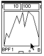
Figure 6: Arrow shows the mini-view
A BPF editor could be created and opened with the following code:
(let ((editor (pw::make-BPF-editor (pw::make-break-point-function '(0 100) '(0 100)) 'C-bpf-view ))) (window-select editor))
Function make-BPF-editor constructs a BPF editor as follows:
(defun make-BPF-editor (bp &optional editor-view-class) (let* ((win (make-instance 'C-BPF-window :window-title (format nil "BPF~A" (incf *BPF-window-counter*) :close-box-p nil :window-show nil :view-position #@(10 40) :view-size #@(250 275))) (bp-view (make-instance (if editor-view-class editor-view-class 'C-bpf-view) :view-container win :view-position #@(2 2) :view-size #@(240 217) :break-point-function bp :track-thumb-p t))) (add-subviews win bp-view) (setf (BPF-editor-object win) bp-view) (scale-to-fit-in-rect bp-view) win))
Event processing in a BPF window handles activation anddeactivation by simply installing or removing a suitable BPF menuitem in the menu bar. Mouse moving updates cursor according towhether it is over a point of the curve (cross hair) or not (arrow).Other events are passed to the panel. The relevant methods are:
(defmethod view-click-event-handler ((self C-bpf-view) where) (declare (ignore where)) (setf *bpf-view-draw-lock* t) (if (selection? self) (reset-selection self) (let ((new-point (view-mouse-position self))) (setf *last-mouse-point* new-point) (setf *global-last-mouse-point* (view-mouse-position (view-window self))) (setf *last-scroll-position* (view-scroll-position self)) (when (string= (edit-mode self) "edit") (unless (active-point self) (insert-by-new-point self new-point) (update-bpf-view self)) (let ((x-range (give-prev+next-x (break-point-function self) (active-point self)))) (setq *prev-point-h-val* (first x-range)) (setq *next-point-h-val* (second x-range)))))))
A first click erases any previous selection (if any). Then mouseposition is recorded. If the mouse was not over a curve point, theclick creates a new point defined by the mouse coordinates (methodinsert-by-new-point ) and the curve is redrawn (methodupdate-bpf-view ). Then the pair of curve points closest to the leftand right of the mouse position are found and their horizontalcoordinates obtained (method give-prev+next-x ) and stored in twoglobal variables. These variables are used to update curve drawingwhile mouse dragging in method view-mouse-dragged below.
(defmethod view-mouse-dragged ((self C-bpf-view) mouse) (setq mouse (view-mouse-position self)) (let* ((mouse-h (point-h mouse)) (mouse-v (point-v mouse)) (new-point (make-point mouse-h mouse-v))) (display-mouse-moved self mouse-h mouse-v) (cond ((string= (edit-mode self) "sel") (selection-rect-dragged self)) ((string= (edit-mode self) "zoom") (draw-zoom-hair-line self (view-mouse-position (view-window self)))) ((string= (edit-mode self) "drag") (view-position-dragged self)) (t (when (active-point self) (setf *bpf-view-draw-lock* nil) (when (<= *prev-point-h-val* (point-h new-point) *next-point-h-val*) (with-focused-view self (draw-bpf-function-xor self) (set-break-point-function (break-point-function self) (subst new-point (active-point self) (break-point-list (break-point-function self)) :test #'eql)) (setf (active-point self) new-point) (draw-bpf-function-xor self))))))))
The method dispatches on mode. "select" mode draws a black regionfollowing mouse horizontal displacement (methodselection-rect-dragged ). "zoom" mode draws a dashed rectangle (first click and current mouse position defining rectangle corners)circunscribing the zooming region. "drag" mode moves the curvefollowing the mouse (method view-position-dragged ). "edit" modefirst erases the curve section between the points stored in theglobal variables, inserts a curve point defined by the mouse positionand then redraws the curve section (methods draw-bpf-function-xor andset-break-point-function ). The panel draws a BPF with method
(defmethod view-draw-contents ((self C-bpf-view)) (let ((*no-line-segments* (display-only-points (view-container (mini-view self))))) (with-focused-view self (when (show-bpf-grid-fl self) (view-draw-axis self)) (draw-bpf-function (break-point-function self) self t (h-view-scaler self)(v-view-scaler self)) (call-next-method)) (when (selection? self) (draw-selection self))))
Variable *no-line-segments* is set to T if no lines connecting thecurve points are to be drawn (controlled by the flip-mode popup menuitem of the multi-bpf patch box). A grid is drawn (if requested) inmethod view-draw-axis. The function curve is drawn by
(defmethod draw-bpf-function ((self C-break-point-function) view draw-rects-fl h-view-scaler v-view-scaler) (let ((x-points (x-points self)) (y-points (y-points self)) (y (point-v (view-size view)))) (draw-bpf-function-points x-points y-points h-view-scaler v-view-scaler draw-rects-fl y))) (defun draw-bpf-function-points (x-points y-points h-view-scaler v-view- scaler draw-rects-fl y) (let (point-x-now point-y-now) (when x-points (setq point-x-now (min #,(1- (expt 2 15)) (round (car x-points) h-view-scaler)) point-y-now (min #,(1- (expt 2 15)) (round (car y-points) v-view-scaler))) (unless *no-line-segments* (#_MoveTo :long (make-point point-x-now (- y point-y-now)))) (if draw-rects-fl (draw-rect (- point-x-now 1) (- (- y point-y-now) 1) 1 1) (if *no-line-segments* (draw-rect (- point-x-now 1) (- (- y point-y-now) 1) 1 1))) (pop x-points)(pop y-points) (while x-points (setq point-x-now (min #,(1- (expt 2 15)) (round (car x-points) h-view-scaler)) point-y-now (min #,(1- (expt 2 15)) (round (car y-points) v-view-scaler))) (unless *no-line-segments* (#_LineTo :long (make-point (make-point point-x-now (- y point-y-now))))) (if draw-rects-fl (draw-rect (- point-x-now 1) (- (- y point-y-now) 1) 1 1) (if *no-line-segments* (draw-rect (- point-x-now 1) (- (- y point-y-now) 1) 1 1))) (pop x-points)(pop y-points)))))
draw-bpf-function-points is a rather low level drawing method. Ituses toolbox traps #_MoveTo and #_LineTo to move to a specific pixelposition and to draw a line segment between two given points.Segments are only drawn when variable *no-line-segments* (see above)is NIL. Otherwise tiny rectangles representing each point are drawn(function draw-rect ). Expressions of the form
(min #,(1- (expt 2 15)) (round (car x-points) h-view-scaler)
set an upper bound on the horizontal coordinates. A point fartherto the right than 32767 will get its X-coordinate clipped at thatvalue. This severe restriction in PW's break point functions is dueto the fact that curve points are directly represented as MCL points.These are integer encodings of a pair of short integers givingX and Y point coordinates. This complication set aside, the methodjust draws each line segment (or point rectangle) using theappropriate toolbox traps on the relevant points coordinates. A breakpoint function itself is represented in PW as the object
(defclass C-break-point-function () ((break-point-list :initform nil :initarg :break-point-list :accessor break-point-list) (x-points :initform nil :accessor x-points) (y-points :initform nil :accessor y-points)))
where break-point-list is the list of integer encoded points andx-points, y-points are respectively the decoded lists of X and Ycoordinates. There are, of course, methods for inserting and removingpoints from a BPF. These are standard list processing proceduresacting on the above slots that will not be described here. The lastevent handling method in a BPF panel that we will be concerned withis key pressed handling:
(defmethod key-pressed-BPF-editor ((self C-bpf-view) char) (cond ((eq char #\f) (scale-to-fit-in-rect self) (update-bpf-scroll-bar-settings self) (update-bpf-zoom-ctrls self) (update-bpf-view self t)) ((eq char #\+) (setf (h-view-scaler self) (max 0.07 (* 0.9 (h-view-scaler self)))) (setf (v-view-scaler self) (max 0.07 (* 0.9 (v-view-scaler self)))) (update-bpf-zoom-ctrls self) (update-bpf-view self t)) ((eq char #\-) (setf (h-view-scaler self) (* 1.1 (h-view-scaler self))) (setf (v-view-scaler self) (* 1.1 (v-view-scaler self))) (update-bpf-zoom-ctrls self) (update-bpf-view self t)) ((eq char #\K) (kill-all-except-first (break-point-function self)) (update-bpf-view self)) ((eq char #\backspace) (when (active-point self) (remove-point-from-bpf (break-point-function self) (active-point self)) (update-bpf-view self))) ((eq char #\g) (setf (show-bpf-grid-fl self) (not (show-bpf-grid-fl self))) (update-bpf-view self t)) ((eq char #\BackArrow) (shrink-selection-by-time self)) ((eq char #\ForwardArrow) (expand-selection-by-time self)) ((eq char #\DownArrow) (shrink-selection-by-value self)) ((eq char #\UpArrow) (expand-selection-by-value self)) ((eq char #\Tab) (let* (ind (ctrls (bpf-radio-ctrls (view-window self))) (len (length ctrls))) (for (i 0 1 (1- len)) (when (radio-button-pushed-p (nth i ctrls)) (setq ind (mod (1+ i) 4)) (set-bpf-edit-mode (view-window self) (nth ind ctrls) (dialog-item-text (nth ind ctrls))) (setq i 100))))) (t (ed-beep))))
The only interest here is documentary. It can be found in theabove code the name of the method handling each key pressed. To roundup the description of the BPF implementation in PW we have to mentionthe relation between the BPF panel and the equivalent curve that getsdrawn in the multi-bpf patch box. As mentioned, the panelkeeps a pointer to the object containing this equivalent curve in itsmini-view slot. As can be seen in the event handling methods of thepanel, actions affecting the layout of the curve call the followingmethod for updating the drawing:
(defmethod update-bpf-view ((self C-bpf-view) &optional mini-draw-lock) (let ((*no-line-segments* (and (pw-object (view-container self)) (points-state (pw-object (view-container self)))))) (with-focused-view self (with-pen-state (:pattern *white-pattern*) (fill-rect* (point-h (view-scroll-position self)) (point-v (view-scroll-position self)) (w self)(h self)))) (view-draw-contents self) (update-bpf-origo-ctrls self) (unless mini-draw-lock (when (mini-view self) (update-mini-view (mini-view self))))))
which first erases the whole rectangle containing the curve, thensends view-draw-contents (described above) to the panel and finallycalls update-mini-view on the mini-view which does exactly thesame drawing operations on that object.
List and text editors are also available in PW. We describe themnext.
A list editor (see Figure 7) allows convenient manipulation ofLisp tables (lists of lists). It consists of a window (classC-table-window) containing a table dialog item (class C-list-item)view. Its associated patch box is lst-ed (classC-patch-list-editor). These objects are defined as
(defclass C-table-window (C-application-window) ()) (defclass C-list-item (C-array-item) ()) (defclass C-array-item (table-dialog-item) ((my-array :initform (make-array '(2 2)) :initarg :my-array :accessor my-array)))
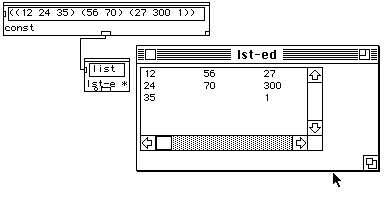
Figure 7: a lst-ed box and its list editor(pointed at by the arrow)
so that a list editor could be constructed by the code
(let* ((cell (make-instance 'C-list-item::C-list-item :view-font '("Monaco" 9 :plain) :table-dimensions (make-point 2 2) :cell-size (make-point C-list-item-h::cell-width C-list-item-h::cell-hight) :view-size (make-point 100 80))) (editor (make-instance 'C-table-window-h::C-table-window :view-subviews (list cell) :window-show nil :window-title "list editor"))) (C-list-item-h::set-array cell '((12 24) (7 3))) (window-select editor))
A list item (the panel of the list editor) is a subclass of MCL'sstandard table-dialog-item class. It contains a table of cells, eachcell containing a data value. The table is arranged so that whenmapped to a list representation each table column corresponds to asublist in that list. Event handling in a list editor window isrestricted to the following:
(defmethod key-pressed-extra ((self C-table-window) char) (let* ((table (first (subviews self))) (selection (car (selected-cells table)))) (if (and selection (not (out-side-list-p table selection))) (case char (#\ForwardArrow (if (option-key-p) (add-forward-element table selection) (next-right-element table selection))) (#\BackArrow (if (option-key-p) (add-backward-element table selection) (next-left-element table selection))) (#\upArrow (cond ((shift-key-p) (add-upward-row table selection)) ((option-key-p) (add-upward-element table selection)) (t (next-up-element table selection)))) (#\DownArrow (cond ((shift-key-p) (add-downward-row table selection)) ((option-key-p) (add-downward-element table selection)) (t (next-down-element table selection)))) (#\Backspace (cut-element table selection)) (#\h (open-application-help-window self)) (otherwise (set-array-item table selection (string char)) (edit-selected-cell table) ;;;(ed-beep) )))))
Only arrow keys are handled. If hit in isolation they move throughthe table cells along its direction. A shift-key simultaneouslypressed adds a row or a column to the table. An option key adds acell. Moving to the next cell downwards, for example, is done asfollows:
(defmethod next-down-element ((self C-list-item) point) (let* ((sublist (nth (point-h point) (my-array self))) (place (1+ (point-v point))) (length (length sublist))) (if (= length place) (add-downward-element self point) (progn (cell-select self (make-point (point-h point) place)) (cell-deselect self point)))))
Trying to go pass the lowest row causes addition of an element.Otherwise, the current cell is unselected and the cell below it isselected. Other arrow handling methods are similar. Other eventoperations are handled directly by MCL's table-dialog-item.
A text editor is considered in the following section.
PW's text editor has the same functionalities as MCL's Fredwindows. The editor is just a Fred window linked to thetext-win patch box (see Figure 8). A set of methods providesfunctionalities for getting (adding) text elements from (to) thatwindow. Creating a text editor amounts to instantiating a fred windowas follows:
(let ((editor (make-instance 'fred-window :window-show nil))) (buffer-insert (fred-buffer editor) "a text for us to dwell") (window-select editor))
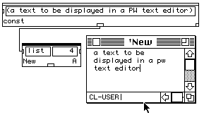
Figure 8: A text-win box and its editor(indicated by the arrow).
Since editing is basically handled by MCL only patch box methodsare supplied for writing characters on the window or for reading fromit, as in the method below:
(defmethod add-to-file ((self C-patch-file-buffer) list format) (let ((count 0) (format (if (zerop format) (length list) format)) (mark (fred-buffer (if (not (and (fred-win self) (wptr (fred-win self)))) (get-new self) (fred-win self))))) (unless *add-option* (select-all (fred-win self)) (ed-kill-selection (fred-win self))) (dolist (item (list! list)) (if (characterp item) (buffer-insert mark (format nil (coerce (list item) 'string))) (progn (buffer-insert mark (format nil " ~S" item)) (if (zerop (rem (incf count) format)) (buffer-insert mark (format nil "~%"))))))))
which first eliminates selected text (method ed-kill-selection),then inserts each element of the input list in the fred window(method buffer-insert mark). A Carriage-Return character is insertedwhen at the end of the given line length.
As was already mentioned, certain PW boxes have windows associatedwith them. This windows are usually editors giving manual access tovalues computed by the box's function. Since this is a common featureof PW, a particular class has been designed to encapsulate generalfunctionalities to be expected of the interaction between a box andits window:
(defclass C-patch-application (C-pw-functional) ((application-object :initform nil :initarg :application-object :accessor application-object) (lock :initform nil :accessor lock) (value :initform nil :accessor value) (window-state :initform nil :accessor window-state)))
where C-pw-functional is a class defining boxes that have thepossibility of adding themselves extra inputs (patch boxes with theletter "E" at the bottom right):
(defclass C-pw-functional (C-pw-extend) ())
(defclass C-pw-extend (C-patch)())
Slots are:
application-object :
A pointer to the window associated with the box.
lock :
A graphical object (small circle) allowing locking/unlocking ofbox evaluation.
value :
T if the box is locked.
window-state :
The saved state of button controllers in the associated window.
The initialization method of an application box creates theassociated window :
(defmethod initialize-instance :after ((self C-patch-application) &key controls) (declare (ignore controls)) (unless (application-object self) (setf (application-object self) (make-application-object self))) (when (application-object self) (set-pw-win+pw-obj (application-object self) *active-patch-window* self)) self)
Method make-application-object should be defined by eachparticular subclass of C-patch-application for creating the window.Standard method set-pw-win+pw-obj sets two way pointers between abox, its window object and the current active patch window. Thefollowing example adds to the current patch window a box (calledtest-box) with an associated MN editor:
(defclass C-patch-box-example (pw::C-patch-application) ()) (defmethod pw::make-application-object ((self C-patch-box-example)) (let ((editor (pw::make-music-notation-editor 'pw::C-MN-window 'pw::C-mus-not-view 'pw::C-music-notation-panel (make-point 600 170))) (chord-line (make-instance 'pw::C-chord-line :chords (list (pw::mk-chord '(6300) '(70) '(-20) '(48)))))) (setf (pw::chord-line (first (pw::editor-objects (pw::editor-view-object editor)))) chord-line) editor)) (pw::defunp test-box ((input list)) list "a test" (identity input)) (let ((box (pw::make-PW-standard-box 'C-patch-box-example 'test-box))) (pw::add-patch-box pw::*active-patch-window* box))
Double-clicking on the bottom of the added box opens the MN editorassociated with it. This is the standard behaviour of any patch boxsubclassed from C-patch-application. In most cases application boxescontain a lock for blocking patch evaluation at the box, thusprotecting any edited data contained in its window. A standard methoddefines a lock as follows:
(defmethod make-lock ((self C-patch-application) &optional position) (setf (lock self) (make-instance 'C-radio-button :view-position (or position (make-point 4 (- (h self) 9))) :view-size (make-point 8 8) :dialog-item-text (get-initial-button-text self) :view-font '("Monaco" 8) :view-container self :dialog-item-action (get-lock-button-fun self)))) (defmethod get-lock-button-fun ((self C-patch-application)) #'(lambda (item) (if (value (view-container item)) (set-dialog-item-text item "o") (set-dialog-item-text item "x")) (setf (value (view-container item)) (not (value (view-container item)))))) (defmethod get-initial-button-text ((self C-patch-application)) "o")
The lock is thus an object drawing as a small circle when unlockedand as a cross when locked. The standard slot value is setaccording to the lock state. The box in the example above can be madeto contain a lock by substituting the following:
(let ((box (make-PW-standard-box 'C-patch-box-example 'test-box))) (make-lock box) (pw::add-patch-box pw::*active-patch-window* box))
By default the lock appears right below the name of the patch box.An application box should open its window when double-clicked at.This is achieved by the standard method
(defmethod open-patch-win ((self C-patch-application)) (let ((win (application-object self))) (unless (and win (wptr win)) (setf (application-object self) (setq win (make-application-object self))) (set-pw-win+pw-obj win *active-patch-window* self) (restore-window-state self win)) (window-select win) (draw-appl-label self #\*)))
which is called by the double-click event handler. The methodreconstructs the window (in case it was closed) and then selects it.The default evaluation behaviour of an application box is to pass theevaluation request to the window. This is really historical. No PWbox takes advantage of this at present. Nonetheless, since that isthe standard behaviour, subclasses of C-patch-application mustspecialize the box evaluation method if they want to get rid of thiscombersome inheritance. So if evaluation is requested on the boxcreated in the example above (by Option-clicking at the output) awindow object will be obtained since the MN window object returnsitself on evaluation. Details on the mechanism of patch boxevaluation are given on section evaluating a patch. Toconclude this section we give a real example of an application box:PW's chord box:
(defclass C-patch-chord-box-M (C-patch-application) ((mus-not-editor :initform nil :accessor mus-not-editor) (out-type :initform :midic :initarg :out-type :accessor out-type) (popUpBox :initform nil :accessor popUpBox) (lock :initform nil :accessor lock) (value :initform nil :accessor value) (current-str :initform "M" :initarg :current-str :accessor current-str))) (defmethod initialize-instance :after ((self C-patch-chord-box-M ) &key controls) (declare (ignore controls) (special *Chord-box-popUpMenu*)) (setf (popUpBox self) (make-popUpbox "M" self *Chord-box-popUpMenu* :view-position (make-point (- (w self) 13) (- (h self) 14)) :view-container self :view-font '("monaco" 9 :srcor))) (make-lock self (make-point 4 (- (h self) 9))) (if (or (not (mus-not-editor self)) (window-killed-p (mus-not-editor self))) (rebuild-editor self)) (set-pw-win+pw-obj (mus-not-editor self) *active-patch-window* self))
The only real novelty is the presence of a popup menu. Methodrebuild-editor is just a call to make-application-object for (whenneeded) getting a new instance of a MN editor.
Other than patch windows, patch boxes and editors PW handlesoperations on menus. These are described next.
Each PW box has a corresponding menu item. The action function ofthis menu item instanciates the box and adds it to the current patchwindow. A certain number of methods in PW facilitates this task.Menus in PW are standard MCL objects. The PW menubar is constructedas follows:
(defvar *patch-work-menu-root* (list *pw-menu-apps* *pw-menu-file* *pw-menu-edit* *PWoper-menu* *pw-kernel-menu* *pw-menu-patch* *pw-windows-menu*))
where each element of the list is a menu object defined as
(defvar *pw-kernel-menu* (new-menu "Kernel"))(defvar *pw-data-menu* (new-menu "Data"))(defvar *pw-Arith-menu* (new-menu "Arithmetic"))......(add-menu-items *pw-kernel-menu* *pw-data-menu* *pw-Num-Fun-Gen-menu* *pw-control-menu* *pw-usual-lisp-menu* *pw-List-menu* *pw-set-menu* *pw-list-combin-menu* *pw-Abs-menu* *pw-BPF-menu* *pw-Extern-menu* *pw-Multidim-menu*)
function add-menu-items is standard in MCL. Function new-menu isthe following:
(defun new-menu (title &rest menus) "Creates a new menu with the given <title> and the list of <menus>." (let ((menu (make-instance 'menu :menu-title title))) (apply #'add-menu-items menu menus) menu))
These two functions are used to create the menu hierarchy in PW.Items refering to patch boxes are added to one of these menu objectsas shown below:
(PW-addmenu *pw-Arith-menu* '(g-min g-max g-random g-average))
where the list elements are functions defining patch boxes of thesame name. Function PW-addmenu is the following:
(defun PW-addmenu (menu funs) "append to the menu <menu> the PW module generators from the list <funs>" (mapc #'(lambda (fun) (PW-addmenu-fun menu fun)) funs) ) (defun PW-addmenu-fun (menu fun &optional box-class) "append to the menu <menu> the PW module generator <fun>" (assert (or (null fun) (typep fun 'CCL::menu-element) (and (symbolp fun) (fboundp fun))) (fun) "~S is not a function or nil or a menu." fun) (cond ((null fun) (CCL:add-menu-items menu (make-instance 'CCL:menu-item :menu-item-title "-" :menu-item-action ()))) ((typep fun 'CCL::menu-element) (CCL:add-menu-items menu fun)) (t (if (defunp-function? fun) (new-PW-box-menu-item menu (string-downcase fun) fun box-class) (CCL:add-menu-items menu (make-instance 'CCL:menu-item :menu-item-title (string-downcase fun) :menu-item-action #'(lambda () (make-lisp-pw-boxes fun *active-patch-window*)))) ))))
Function new-PW-box-menu-item (shown below) is used for creating amenu item instanciating a standard PW box (one defined using PW'sdefunp form). make-lisp-pw-boxes creates a PW box for any Lispfunction.
(defun new-PW-box-menu-item (main-menu mtitle function &optional box-class) (if (not (fboundp function)) (format t "~15A~25A" function "no such function !" ) (multiple-value-bind (args extensible?) (make-defunp-function-arg-list function) (let ((body `(make-PW-standard-box ,(if box-class `',box-class (if extensible? ''C-pw-functional (if (= (length args) 2) ''C-pw-resize-x ''C-patch))) ',function)) (sub-menu (find-menu-item main-menu mtitle))) (unless sub-menu (add-menu-items main-menu (setq sub-menu (make-instance 'menu-item :menu-item-title mtitle)))) (push (eval `(function(lambda () ,body))) *PW-box-instance-list*) (set-menu-item-action-function sub-menu #'(lambda () (add-patch-box *active-patch-window* (eval body)))) sub-menu))))
Given a function defined by PW's defunp form, the callmake-defunp-function-arg-list returns two values: A list giving foreach function argument its name and PW properties (such as type,initial value, etc) and a flag telling whether the corresponding boxshould be extensible (function having &optional or &restarguments). These values are used by make-PW-standard-box toinstanciate a patch box for the function. This box object will be ofthe class C-patch if the box is not extensible and of classC-pw-functional if it is. The code calling make-PW-standard-box ismade the action function of the corresponding menu item. Details onthe function make-PW-standard-box are given in section definingboxes. Variable *PW-box-instance-list* contains the list of alldefined PW boxes. This is used to instanciate them all at imageconstruction time (see section image construction). Finally, functionadd-patch-box is simply defined thus
(defun add-patch-box (win patch) (add-subviews win patch) (set-changes-to-file-flag win) patch)
What has been described thus far constitute a general view of theimplementation of PW's graphical interface. As has been probablynoticed, there are several ways in which the graphical and thesemantic or functional parts interact. The implementation of thisinteraction, which constitutes PW's strongest feature, is describednext.
The functional behaviour of a patch in PW has a directcorrespondance in the behaviour of a Common Lisp form. Moreprecisely, a PW patch induces a patch graph. This is aconnected acyclic graph P=<B, E, C, F, O>, where B is a set ofnodes called boxes, E is a set of nodes called entries,C is a set of directed arcs called connections F is a set ofnode labels called values and O is a set of arc labels calledorderings. C is a subset of BXB U BXE. Patch graphs are in oneto one correspondance to PW patches. Figure 9 shows a patch and thecorresponding patch graph.
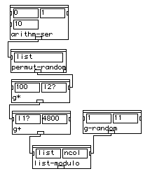
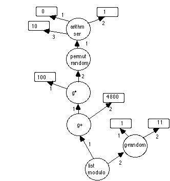
Figure 9. A patch and its corresponding patchgraph. Round nodes are boxes. Square nodes are entries.
Let F be the set of well-formed Common Lisp expressions. We definea valuation function V : P -> F mapping apatch graph to its equivalent Lisp form. We sayV [P] isthe meaning of the patch P. In the next section we precisethis mapping and explain how the actions occuring in PW when a patchevaluation is triggered correspond to the Lisp form given by thevaluation mapping.
A PW box is evaluated by OPTION-clicking at its output rectangle.As was mentioned, this results in the evaluation of the Lispexpression
(eval-enqueue `(format t "PW->~S~%" (patch-value ',(view-container self) ',(view-container self))))
where argument self is the small output rectangle of the box, sothat the expression (view-container self) returns the box whereevaluation is requested. Ignoring some technical aspects, the aboveform is really equivalent to the call
(patch-value (view-container self) (view-container self))
So evaluation of a PW box invokes its patch-value method. Forstandard PW boxes this is defined as follows:
(defmethod patch-value ((self C-patch) obj) (let ((args (ask-all (input-objects self) 'patch-value obj))) (apply (pw-function self) args)))
Here argument obj (see above) is also the box where evaluation isrequested. The PW macro ask-all sends the method given in its secondargument to the list of objects given in its first argument. The restof the arguments of ask-all (i.e. obj) are also passed to the method.In the above code the results of invocations to patch-value for eachbox input are collected in a list. Then the Lisp function associatedwith the box (slot pw-function) is applied to that list.
The meaning of a standard C-patch box in a patch is defined by thevaluation mapping of the equivalent patch graph rooted at the box:
V [BOX.C-patch] = ( value(BOX.C-patch)
V [connection (1,BOX.C-patch)]
V [connection(2,BOX.C-patch)]
...
...
V [connection (n,BOX.C-patch)] )
where connection (i,BOX.C-patch) indicates the target ofthe arc of ordering i from node BOX.C-patch. The valuation ofan entry node is simply
V [ENTRY] = (QUOTE value (ENTRY))
The valuation of the patch graph of figure 9 at node list-modulois thus
(list-modulo (g+ (g* (quote 100) (permut-random (arithm-ser (quote 0) (quote 1) (quote 10)))) (quote 4800)) (g-random (quote 1) (quote 11)))
Since most PW boxes are direct instances of class C-patch theabove valuation accounts for the bulk of patch graphs. However, somePW constructs require a more complex treatment, as in the examplebelow:
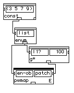
Figure 10: A patch with non standard boxes.
Boxes pwmap and enum are instances of subclasses of C-patch calledC-map-first and C-enum-collect-source, respectively. Valuation forthese are defined as
V [BOX.C-map-first] =
(MAPCAR
(FUNCTION
(LAMBDA (V[connection (1,BOX.C-map-first)] )
V [connection (2,BOX.C-map-first)] ))
V [ connection(1,connection (1,C-map-first))]
)
V [BOX.C-enum-collect-source] =*AN-ENUM-VARIABLE*
So the valuation of the patch in figure 10 at box pwmap gives:
(mapcar (function (lambda (*AN-ENUM-VARIABLE*) (g* *AN-ENUM-VARIABLE* (quote 100)))) (const (quote (3 5 7 9)))))
The real valuation of C-map-first and C-enum-collect-source boxesis somewhat more complex because provision must be made for definingunique variables in the lambda expression (not just*AN-ENUM-VARIABLE* ). These details have been left out forsimplicity.
From the above it follows that the valuation of a PW patchalways leads to a well formed Common Lisp expression. In thissense, a patch is always "correct". There are, of course, patchesthat do not behave according to the user's expectations (not tomention Lisp's expectations!). But then the precise behaviour of thepatch is equivalent to the meaning of the valuation of its patchgraph in the Common Lisp semantics, which (in principle, at least)should be possible to precise.
In the next section we consider a set of PW tools easying the taskof defining new patch boxes.
There is a static typing scheme in PW. Two PW boxes can beconnected when input and output types are compatible. As wasmentioned before, PW box objects store information about their outputtypes whereas box input objects keep a list of possible input types.When defining a PW box then, provision must be made to set up thetype information. A macro in PW is used to this end:
(defmacro defunp (name args outtype documentation &body body) "creates a function and stores info about input and output types" (let* ((parsed-list (collect-keywords args)) (lambda-list (get-lambda-list parsed-list))) (unless (stringp documentation) (error *error-functiondoc-missing* name) ) `(progn (defun ,name ,lambda-list ,documentation ,.body) (set-PW-symbolic-type-data ',name ',parsed-list ',outtype))))
This is equivalent to the Common Lisp defun form exceptthat type information is added to the property list of the functionbeing defined (by the call set-PW-symbolic-type-data ). For example,the evaluation of
(defunp new-box ((input1 list)) number "this is an example" (length (remove nil input1)))
first defines a function new-box which gets the length of itsinput list after removing NIL from it. Then stores the input typelist as the property *type-intypes* of new-box and the output typenumber as the property *type-outtype* of new-box. Types are definedas follows:
(make-type-object 'integer 'C-numbox (list :view-size #@(36 14) :value 0 :min-val -9999 :max-val 999999 :doc-string "fix" :type-list '(fixnum)))
which defines an instance of the class C-numbox (see above). So PWtypes are actually the same object as a box input object. The typeindication is contained in the value of the :type-list keyword. Atype specification in defunp may contain any of the keywords of thetype so as to replicate it with modified values for the givenkeywords, as in
(defunp another-box ((input1 integer (:value 25))) list "this is another example" (make-list input1 :initial-element 0))
What is actually stored in the function's property list iseverything that goes after the name of each argument ( integer(:value 25), in the example above). The right instance for each inputobject of a box can be easily created with this information. This isdone by the function
(defun make-PW-standard-box (class-name pw-function &optional (position (make-point 15 15)) value-list size) (let ((input-boxes-types (make-defunp-function-arg-list pw-function (if value-list (length value-list) 0))) (y-now 5) (index 0) input-boxes module) (while input-boxes-types (push (apply 'make-instance (pop input-boxes-types)) input-boxes) (setf (doc-string (car input-boxes)) (pop input-boxes-types))) (setq input-boxes (nreverse input-boxes)) (if value-list (set-new-values input-boxes value-list)) (dolist (box input-boxes) (if (zerop index) (set-view-position box (make-point 5 y-now)) (progn (set-view-position box (make-point (+ 7 (w box)) y-now)) (incf y-now (+ 2 (h box))))) (setq index (mod (1+ index) 2))) (if (not (zerop index)) (incf y-now (+ 2 (h (car (last input-boxes)))))) (setq module (make-instance class-name :view-position position :view-size (make-point (+ 5 (if input-boxes (apply #'max (ask-all input-boxes 'x+w)) 42)) (+ 13 y-now)) :pw-function pw-function :type-list (get-out-type-list pw-function) :view-subviews input-boxes)) (if size (resize-patch-box module size 0)) module))
First a form containing all the necessary information for creatingan instance of each input object of the box is computed (by the callto make-defunp-function-arg-list ). This is directly obtained fromthe function's property list and from the data base of predefinedtypes. For the example above this form would be
(list 'C-numbox (list :view-size #@(36 14) :value 25 :min-val -9999 :max-val 999999 :doc-string "input1" :type-list '(fixnum)))
Then the box's inputs are instanciated and their positions in thebox computed according to the function's argument order ( in the loop(dolist (box input-boxes)...) ). Inputs are positioned inside thepatch box in two columns, with odd numbered inputs going on the leftand even numbered inputs on the right columns. So in the currentversion of PW care must be taken to give all inputs the same size,except possibly the last one. For example, the following defines abox having wider than normal inputs. The size of the last input isdifferent from the others:
(defunp yet-another-box ((input1 integer (:view-size #@(44 14) :value 12)) (input2 integer (:view-size #@(44 14) :value 8)) (input3 integer (:view-size #@(67 14) :value 5))) list "this is yet another example" (+ input3 (gcd input1 input2)))
which gives the patch box of figure 11
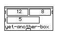
Figure 11: A box with non standard input boxessizes.
The size of the patch box is computed from the size of its inputs.
In the next section we consider boxes defined automatically by PW.These are called abstractions.
In section abstractions we described the graphicalimplications of the process of creating PW abstractions. We saw, inparticular, that method make-abstraction-M of a patch window containsa call to method make-std-abstract-box for constructing the patch boxrepresenting the abstraction. This function is defined thus
(defmethod make-std-abstract-box ((self C-pw-window) patches new-win in-boxes abstract-class) (let (in-put-docs) (when in-boxes (setq in-put-docs (get-absin-boxes-types-n patches in-boxes)) (when (member nil in-put-docs) (message-dialog "WARNING! absin box connected to irreducible types. ALL-type used.") (setq in-put-docs (mapcar #'(lambda (type-spec) '(nilNum)) in-put-docs)))) (make-std-patch-box abstract-class (read-from-string (window-title new-win)) in-put-docs new-win in-boxes)))
Function get-absin-boxes-types-n returns a list of type items foreach absin box in the abstraction. This list gives informationconcerning the infered type of the inputs of the constructed abstractbox. Each element of the list is a sublist whose first element is thetype name and whose second element is the list of keyword-value pairsfor the proposed type of the input. For example, an absinconnected to an entry of a g* box produces the list
((numbers? (:view-size 917540 :value 0 :min-val -9999 :max-val 999999 :doc-string "fx/fl/l" :type-list (fixnum float list))))
The :type-list value is computed by get-absin-boxes-types-n as theintersection of the :type-list values of all entries the sameabsin is connected to. If this intersection is NIL, a warningdialog is displayed and the type is left open (thus all connectionswill be accepted). With this list of type forms a patch box isconstructed for the abstraction by the function
(defun make-std-patch-box (class fun-string type-specs new-win in-boxes) (multiple-value-bind (fun-name exists?) (intern (string fun-string) "USER-ABSTRACTION") (when exists? (warn "the name ~D already exists for an abstraction. A unique name will be chosen (if not a 'redraw')" fun-name) (ed-beep) (setq fun-name (intern (string (gensym (string fun-name))) "USER-ABSTRACTION")) (set-window-title new-win (string fun-name))) (let ((arg-names (mapcar #'(lambda (absin) (read-from-string (doc-string absin))) in-boxes))) (if (all-absins-different arg-names) (progn (set-PW-symbolic-type-data fun-name (list (cons '&required (mapcar #'(lambda (name type) (cons name type)) arg-names (setq type-specs (quote-value type-specs)))) '(&optional) '(&rest)) 'nil) (setf (fdefinition fun-name) (eval `(function (lambda ,arg-names (declare (ignore ,@arg-names))nil)))) (make-PW-standard-box class fun-name (make-point 15 15) (get-current-inbox-vals type-specs))) (progn (CCL:message-dialog "Absin names and Absin numbers should be unique. Please correct this") nil)))))
A function to be associated with the abstraction box must beconstructed. The name of this function should be unique inside thepackage set up for all abstractions (called "USER-ABSTRACTION"). Aswas already mentioned, the property list of this function namecontains the type information of its inputs (this is done by the callto set-PW-symbolic-type-data ). The body of the function does nothing(returns NIL). The box constructed for an abstraction (this, we saw,is done by the call to make-PW-standard-box) belongs to a subclass ofC-patch called C-abstract-M. the evaluation of this box does nottriggers evaluation of its function, as can be seen by the definitionof its patch-value method:
(defclass C-abstract-M (C-abstract) ((popUpBox :accessor popUpBox))) (defclass C-abstract (C-patch) ((patch-win :initform nil :initarg :patch-win :accessor patch-win) (out-obj :initform nil :accessor out-obj) (abstract-in-list :initform nil :accessor abstract-in-list))) (defmethod patch-value ((self C-abstract) obj) (patch-value (out-obj self) obj))
So evaluation of an abstraction box simply passes the evaluationmessage to the absout box of the abstracted patch.Furthermore, evaluation af an absin box in this patch alsoforwards the evaluation message to the subpatch connected to thatinput of the abstract box which corresponds to the absin inthe abstracted patch as can be seen below
(defclass C-abstract-in (C-patch) ;;the class of an absin box ((in-index :initform nil :accessor in-index) (abstract-box :initform nil :accessor abstract-box))) (defmethod patch-value ((self C-abstract-in) obj) (when (abstract-box self) (patch-value (nth (in-index self) (input-objects (abstract-box self))) obj)))
So an abstraction does nothing more than hide from the user asubpatch that is nevertheless implicitly present and used forevaluation purposes. In the next section we consider abstractionsdefined as standard PW boxes having true functions associated withthem.
When a set of patch boxes is cut from a patch window somerepresentation of them has to be kept in case a request is madeafterwards to paste the set again. The representation of the subpatchis in this case a Common Lisp form whose evaluation reconstructsexactly the same boxes it contained and exactly the same connectionsbetween them. The process of constructing this form is calleddecompilation . Each PW box knows how to decompile itself.That is, a particular method of the box class must know how toreconstruct the box. For a standard PW box the method is defined asfollows:
(defmethod decompile ((self C-patch)) (if (and (pw-function self) (defunp-function? (pw-function self))) `(sbox ',(type-of self) ',(pw-function self) ,(pw-function-string self) ,(active-mode self) ,(view-position self) (list ,@(ask-all (pw-controls self) 'value))) `(make-instance ',(class-name (class-of self)) :view-position ,(view-position self) :view-size ,(view-size self) :active-mode ,(active-mode self) :pw-function ',(pw-function self) :type-list ',(type-list self) :view-subviews (list ,@(ask-all (pw-controls self) 'decompile)))))
Only the T part of the if is actually relevant. The rest is keptthere for compatibility. So decompilation of a box constructs a Lispform which is simply a call to the function sbox with arguments theclass of the box object, the name of its associated function, thename appearing on the box, a flag indicating whether the box wasselected, the box position in the window and the list of all currentvalues in the input rectangles. Decompilation of the box in Figure 11would give, for example
(sbox 'c-patch 'yet-another-box "yet-another-box" t 8978630(list 12 8 5))
Function sbox is
(defun sbox (class-name pw-function pw-function-string active? &optional (position (make-point 15 15)) value-list size sp) "same as function 'box' with activation flag "(let ((box (box class-name pw-function pw-function-string position value-list size sp))) (setf (active-mode box) active?) box)) (defun box (class-name pw-function pw-function-string &optional (position (make-point 15 15)) value-list size sp) "same as make-pw-standard-box with a shorter name and specific method calling, for even more compact PW boxes decompilation "(let ((box (make-PW-standard-box class-name pw-function position value-list size))) (setf (pw-function-string box) pw-function-string) (complete-box box sp) box))
Function make-PW-standard-box (described previously) is called forreconstructing the box. Then the right name of the box is stored.Method complete-box is called on the created box. This is onlydefined for special boxes that have to do some very specificinitializations just after the box is instanciated (as, for example,putting the right output dimension choice for a chordbox patchbox). The argument sp corresponds to whatever was added at the end ofa standard sbox call form by the decompile method of a special box.Standard PW boxes do nothing on the complete-box method. Finally theright selection flag is stored (in function sbox above). Thefollowing code shows decompilation and box completion for a nonstandard PW box (a direct subclass of C-patch):
(defmethod decompile ((self C-patch-chord-box-M)) (append (call-next-method) `(nil ,(out-type self)))) (defmethod complete-box ((self C-patch-chord-box-M) output-type) (set-output self output-type))
The edition methods of the patch window (which is invoked by theedition action) adds to the construction or evaluation of the sboxform a call to construct or regenerate box connections and to add thereconstructed subpatch to the active window (see the definitions ofcopy and paste for C-pw-window above).
While decompilation produces a Lisp form whose evaluationreconstructs a set of graphical objects, a complementary processcalled compilation produces a Lisp form whose evaluation givesexactly the same result as evaluating the subpatch defined by the setof graphical objects. Briefly stated, compilation of a patch returnsits valuation (see above). Each patch box knows how to computethe valuation of a patch rooted at itself. For a standard box, themethod is the following:
(defmethod compile-me ((self C-patch) obj) (let ((abs (mapcar #'(lambda (ctrl input) (if (eq ctrl input) `'',(patch-value ctrl obj) (compile-me input obj) )) (pw-controls self) (input-objects self)))) `(list ',(pw-function self) ,@abs)))
This mimics exactly the definition of a valuation of a C-patchbox. First the valuations of the connected boxes or entries arecomputed. Then a form calling the associated function with thosevaluations as arguments is output. Compilation of a non standard PWbox such as the enum-pwmap pair is also a replication of thevaluation described previously, as can be seen below
(defmethod compile-me ((self C-enum-collect-source) obj) (let ((code (if (eq (car (input-objects self)) (car (pw-controls self))) `'',(patch-value (car (input-objects self)) (my-car obj)) (compile-me (car (input-objects self)) (my-car obj))))) ;obj)))) (if (consp obj) code `',(slot-value self 'comp-var)))) (defmethod compile-me ((self C-map-first) obj) (let* ((inputs (input-objects self)) (enums (list* (first inputs) (nthcdr 2 inputs))) (vars (mapcar #'(lambda (input) (setf (slot-value input 'comp-var) (intern (format () "~S" (gensym "*enum-value*"))))) enums)) (code (if (eq (second inputs) (second (pw-controls self))) `'',(patch-value (second inputs) obj) (compile-me (second inputs) obj))) (enum-codes (ask-all enums #'compile-me (list obj))) res (local-vars (dotimes (k (length enums) res) (push (intern (format () "~S" (gensym "*local-val*"))) res)))) `(list 'let ',vars (list 'mapcar (list 'function (list 'lambda ',local-vars '(setf ,@(apply #'append (mapcar #'list vars local-vars))) ,code)) ,@ enum-codes))))
The difference of this code with the valuation defined previouslyis simply a matter of detail: provisions are made to define uniquevariables in the lambda expressions. Also, since a pwmap boxis extensible, valuations of all inputs to each enum box mustbe collected. Box compilation is called by the compile item ofthe popup menu associated with abstractions.
A process closely related to decompilation is patch saving andloading. This is described in the next section.
As with box cutting and pasting, patch window saving isessentially a decompilation process. A suitable Lisp form isconstructed whose evaluation leads to the replication of the entirepatch. The window saving method is
(defmethod pw-window-save ((self C-pw-window)) (if (not (patch-win-pathname self)) (pw-window-save-as self) (let ((*print-pretty* ())) (set-window-title self (save-window-title self)) (when (wins-menu-item self) (set-menu-item-title (wins-menu-item self) (window-title self))) (delete-file (patch-win-pathname self)) (with-open-file (out (patch-win-pathname self) :direction :output :if-does-not-exist :create :if-exists :supersede) (prin1 '(in-package :pw) out) (let ((*package* :pw)) (prin1 (decompile self) out))) (reset-changes-to-file-flag self))))
If no name has been given to the window, a standard choose filedialog is displayed asking for a name (the call pw-window-save-as). MCL's variable *print-pretty* is set to NIL so that all generatedLisp code will be stuffed into one long line (this saves disk space).If a file linked to the patch existed already, it is deleted. Theform (in-package :pw) is written at the head of the file (this alsosaves disk space: no package specification is needed for PW code).Then the whole window is decompiled and the resulting form written tothe file. Decompilation of a PW window is as follows:
(defmethod decompile ((self C-pw-window)) `(make-win ',(type-of self) ,(window-title self) ,(view-position self) ,(view-size self) (list ,@(ask-all (controls self) 'decompile)) (list ,@(window-decompile-connections self) ) ,(and (top-level-patch-win? self) t)))
Ò
which produces a Lisp form which calls function make-win with allof the window parameters and decompilation forms of all patch boxescontained in the window. A window containing the patch in figure 9would decompile into the form:
(make-win 'c-pw-window "PW-arch-Fig9" 2490418 19661300 (list (sbox 'c-patch 'epw::list-modulo "list-modulo" nil 14090391 (list "(1 2)" 2)) (sbox 'c-pw-resize-x 'epw:permut-random "permut-random" nil 5111928 (list "(1 2)") 2228304) (sbox 'c-patch 'epw::g* "g*" nil 7929977 (list 100 100)) (sbox 'c-patch 'epw:arithm-ser "arithm-ser" nil 983159 (list 0 1 10)) (sbox 'c-patch 'epw::g+ "g+" nil 10879098 (list 0 4800)) (sbox 'c-patch 'epw::g-random "g-random" nil 10813663 (list 1 11))) (list (list 0 0 4) (list 0 1 5) (list 1 0 3) (list 2 1 1) (list 4 0 2)) t)
Other than decompilation forms of each patch box, the above codecontains at the end a list of box connections. sublist (list 2 1 1)for example, says that the output of the second (permut-random) boxin the given box list is connected to the second input of the thirdbox ( g*) in the box list. make-win is defined thus
(defun make-win (class title position size controls connections &optional close-button) (let ((win (make-instance class :window-title title :view-position position :view-size size :window-show () :close-box-p close-button ))) (apply #'add-subviews win controls) (mapc #'(lambda (connection-list) (connect-nth-control (nth (first connection-list) controls) (second connection-list) (nth (third connection-list) controls))) connections) (push win *pw-window-list*) (tell controls 'set-pw-window-pointers win) win))
which creates an instance of the window, then puts instances ofthe patch boxes (created from the decompiled forms in controls) assubviews, sets connections from the decompiled connection list andfinally asks all boxes to store a pointer to the newly createdwindow.
This description rounds up a very general view of theimplementation of PW. As was underlined already, there are severalissues we have not addressed. We think nevertheless that what isincluded here gives enough information to be able to study particulardetails directly from the source code. As a matter of completeness,however, we describe in the next final section a set of importantfunctionalities that surround the PW kernel. These include a MIDIdriver and several utilities for PW's core image creation.
PW interacts with sound synthesizers through MIDI. Music notationeditors have options for playing which translate the contents ofmusical objects into MIDI format. A background task is then able tosend the formatted data through the modem port (the printer portshould NOT be connected to MIDI when using PW). This scheme isdescribed in section MIDI driver & scheduler.
PW sets itself up as a stand alone application by creating a MCLcore image. Functions for achieving this are described in sectionimage construction.
MIDI interaction in PW is done by a MIDI driver (implemented byLee Boynton) set up as a resource file (called "MIDI.rsrc"). Thisresource file is explicitly loaded by the PW function midi-opencalled at core image launching time. The MIDI driver is essentiallytransparent from PW's point of view. It keeps a FIFO buffer of eventsto be sent through the port. MIDI events are Common Lisp fixnumencodings of MIDI opcode, channel, data1 and data2 (created byfunction make-midievent). Events are put into the buffer by a call tomidi-write-time, defined as follows:
(defun midi-write-time (event time) (when *open* (%put-long *iopb* 8 36) ;ioReqCount (%put-long *iobuf* time 0) (%put-long *iobuf* event 4) (io-trap #xA203)))
where time is the exact time event should be sent. The abovefunctions uses toolbox traps to address the FIFO buffer and insertthe event at the right place. Function midi-write-time is reallyhidden from PW which interacts with the MIDI driver through ascheduler. PW uses the scheduler to set up precise invocationtimes for Common Lisp functions or methods. These are usually MIDIrelated methods. Scheduling a function is done, for example, asfollows:
(defmethod play-chosen-chords ((self C-chord-line) the-notes t-offset) (when the-notes (let ((start-time (note-attack-time the-notes))) (apdfuncall 10 (priority) (- start-time t-offset) 'keep-playing-notes self the-notes start-time (compute-approx))))) (defmethod keep-playing-notes ((self C-chord-line) notes start-time &optional approx) (let ((approx-m (approx-for-playing (midic (caar notes)) approx))) (write-midi-note (dur (caar notes)) (+ (chan (caar notes)) (micro-channel approx-m) -1) (truncate approx-m 100) (vel (car (pop notes)))) (if notes (re-dfuncall (- (cdr (car notes)) start-time) self notes (cdr (car notes)) approx))))
The two methods together implement playing a list of notes throughMIDI. The call to the scheduler macro apdfuncall initiates ascheduler task begining at the first note absolute attack time (i.e.start-time minus t-offset), with an initial delay of 10 hundreths ofa second and with the default priority. The task consists of invokingmethod keep-playing-notes at the specified time. This latter methodinvokes write-midi-note which itself calls midi-write-time forcreating the corresponding MIDI event and inserting it in the FIFObuffer at the right place in time. Once this first note is scheduledfor playing, the method re-schedules itself (scheduler macrore-dfuncall) for playing the rest of the notes with a delay equal tothe delay between the first scheduled note and the current one.apdfuncall is defined as follows:
(defmacro apdfuncall (advance priority delay function . arguments) "Evaluates immediately all its arguments (producing garbage with the <arguments> list) and creates a scheduler task with the given <advance> and <priority>, which will apply <function> to <arguments> after the given <delay>." `(when (check-start '(apdfuncall ,advance ,priority ,delay ,function ,.arguments)) (create-task (logtime) ,advance ,priority ,delay ,function (list ,.arguments))))
which first makes sure there is a start call before it and thencreates the task. Function write-midi-note is as follows:
(defun write-midi-note (dur chan key vel) (unless (or (minusp key) (> key 127)) (setq chan (1- chan)) (midi-write (make-midievent 9 chan key vel)) (dfuncall dur 'midi-write (make-midievent 9 chan key 0)))) (defun midi-write (event) (midi-write-time event (if (null *current-task*) 0 (- (logtime) *schedulertime--clocktime*))))
This creates and sends a MIDI note-on event and then schedules(scheduler macro dfuncall) a note-off event after the note'sduration. The scheduler handles the usual wait andready queues of tasks. This is done by functioncheck-scheduler which is put into MCL's list of interrupt-timecallable functions (global variable *eventhook*).
In the next section we describe utilities for the administrationof PW core images.
The whole PW environment is integrated as a stand aloneapplication in a suitable core image file. Creating a PW core imageentails following some very precise steps:
1. Load all (compiled) Lisp files defining the PWenvironment
2. Define quit-time callable Lisp forms to save pointers to PWobjects such as the PW menubar.
3. Define startup callable Lisp forms for setting up pointers togeneral PW objects such as menus, cursors, etc.
4. Save a dump image.
PW files are divided in two sets: Kernel files, whichcontain all of PW except music related editors and boxes, andmusic files, the rest. Two PW global variables contain thelist of files in each: *PW-kernel-files* and *PW-Music-files*.Loading PW could thus be done by
(mapc #'load-once *PW-kernel-files*)
(mapc #'load-once *PW-Music-files*)
PW adds function quit-pw-save-menus to the list of quit-callablefunctions. This function is as follows:
(defun quit-pw-save-menus () (setf *save-menubar* (remove-duplicates (append *default-CCL-menubar* *patch-work-menu-root* *BPF-menu-root* ()) :from-end t)) (ccl:set-menubar *save-menubar*))
Function start-pw is added to the list of startup functions:
(defun start-pw () (load"CL:PW-inits;start-kernel-image"))
(new-restore-lisp-function 'start-pw)
The above function uses a logical pathname begining with "CL:"."CL", "root" and "PW" define PW's basic logical directory paths."root" points to the disk where PW was launched from. The other twoare defined relative to this one. "CL" points to the "PW 2.0" folder."PW" points to folder "PW-1.5-code" inside "PW 2.0". When an image isconstructed, a Lisp file called "CL-path" is created containing thedefinitions of these three logical path names. When PW is launched,this file is loaded thus creating the right absolute paths. Thecontents of this file could be as follows:
(setf (logical-pathname-translations "ccl") '((#4p"ccl:inspector;**;*.*" #4p"ccl:library;inspector folder;**;*.*") (#4p"ccl:interfaces;**;*.*" #4p"ccl:library;interfaces;**;*.*") ("ccl:**;" "root:mcl 2.0;**;"))) (setf (logical-pathname-translations "cl") (list (list "**;" (format nil "root:~a**;" (let (part-log) (dolist (seq (butlast (cddr (pathname-directory (truename "home:") ))) part-log) (setq part-log (concatenate 'string part-log seq ";")))))))) (setf (logical-pathname-translations "pw") '(("**;" "cl:pw-1.5-code;**;"))) (setf (logical-pathname-translations "restore") '(("**;" "cl:pw-inits;restore;**;")))
which define Common Lisp logical pathname translations of "CL" and"PW" as described above, and of "ccl" which should point to the MCLfolder. The translation of "root" is done somewhat differently infunction
(defun def-root-path () "Restores the root logical directory of the volume containing the image restored." (let ((home-dir (pathname-directory (truename (user-homedir-pathname)))) root-dir) (unless (and (eq (first home-dir) :ABSOLUTE) (consp (rest home-dir)) (not (consp (second home-dir)))) (error "The home directory ~S is not absolute." home-dir)) (ccl:def-logical-directory "root" (format () "~A:" (second home-dir))) (setq root-dir (make-pathname :directory (list (first home-dir) (second home-dir) :wild-inferiors))) (def-logical-path "root" root-dir)))
which finds the path of the MCL image just launched (functionuser-homedir-pathname) and defines the translation of "root" as anabsolute pathname taking only the device part (i.e. the disk) ofthat. All other path name translations depend on "root" so it is thefirst thing that should be defined. This is accomplished by puting(by a call to new-restore-lisp-function) the following as the firstof all startup callable functions :
(defun define-PW-root-paths() (INIT:def-root-path) (load-again "home:cl-path" :if-does-not-exist nil))
This first calls the "root" defining function and then loads alltranslations ("home" is a standard MCL logical pathname pointing tothe folder containing the PW image).
Once PW loaded and the startup and quitting functions set up, theimage is constructed by a call to
(defun save-dump-image (image-name &optional heap-sizeno-compiler)
"Saves the dump-image object named <image-name> as thedump-image file stored in its field \"file\" or as a new fileinteractively chosen by the user."
(defun save-dump-image (image-name &optional heap-size no-compiler) "Saves the dump-image object named <image-name> as the dump-image file stored in its field \"file\" or as a new file interactively chosen by the user." (let* ((image (_find-image image-name)) (file (or (dump-image-file image) (CCL:choose-new-file-dialog :button-string "Save" :prompt (format () "Save ~A dump-image file as:" image-name) )))) (setf (dump-image-date image) (get-universal-time)) (show-dump-image image-name t) (push image *dump-image-list*) (CCL:eval-enqueue (if heap-size `(CCL:save-application ',file :excise-compiler ,no-compiler :memory-options '(:mac-heap-minimum ,heap-size :mac-heap-maximum ,(+ heap-size 1000))) `(CCL:save-application ',file :excise-compiler ,no-compiler) ))))
which simply invokes MCL's standard function save-application forconstructing and saving the image, possibly with a new heap size andpossibly with the compiler excised (the standard PW distributionimage).
[an error occurred while processing this directive]